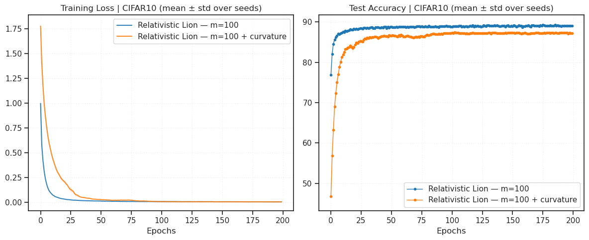
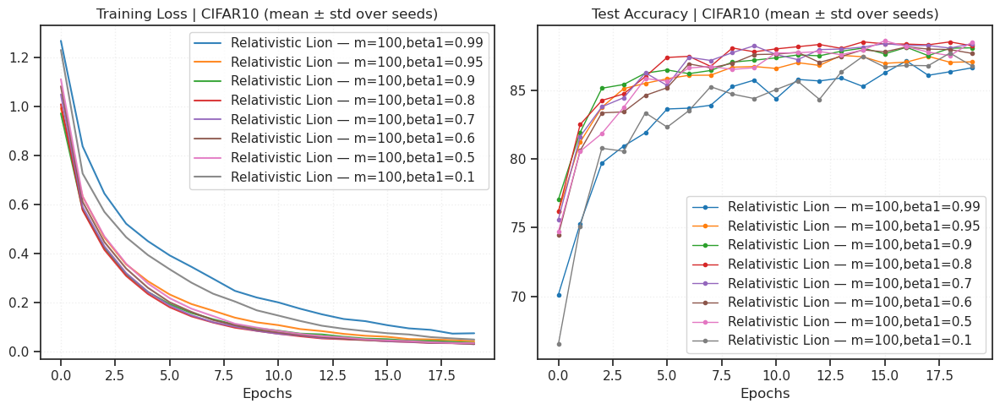
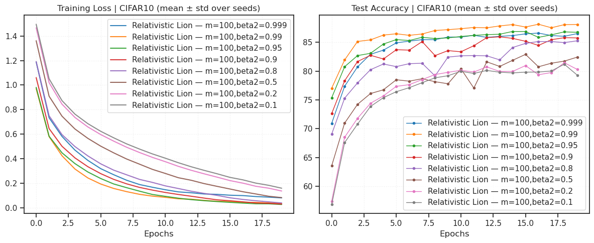
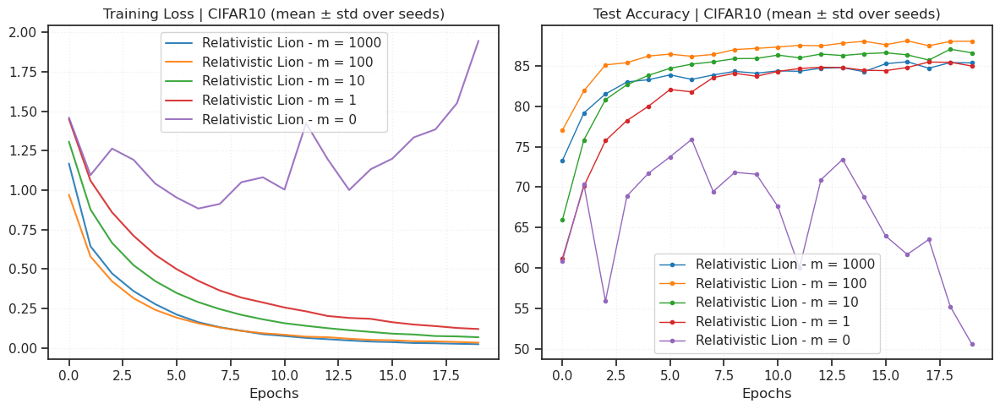
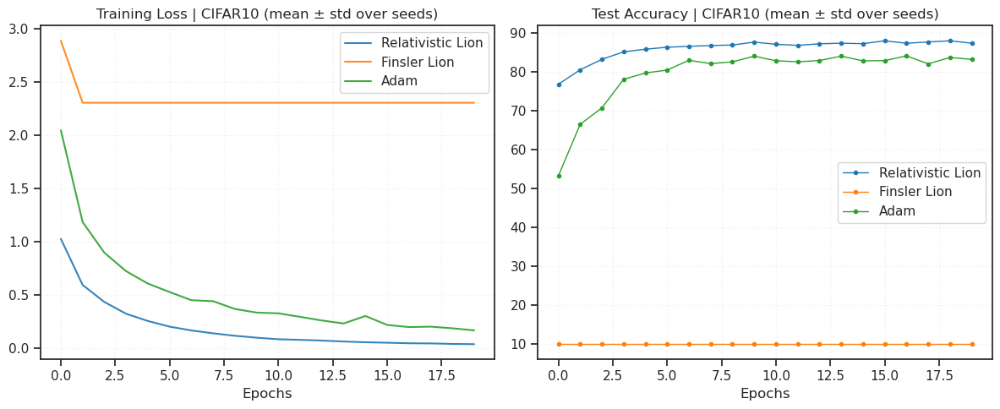

GRA: lion#
project = GRA, host = chewie, device = cuda:1
Goals:#
Test these Lion extensions:
relativistic
device_idx = 1
device = f'cuda:{device_idx}'
print(f"device: {device} ——— host: {os.uname().nodename}")
device: cuda:1 ——— host: mach
Main#
from optimzers import *
from test.test import *
cfg = TrainConfig(dataset='CIFAR10', epochs=200, device="cuda:0", verbose=True, amp=False)
lr = 1e-3
mass = 100.0
kws = dict(lr=lr, mass=mass, betas=(0.8, 0.99)) # , use_curvature=True)
name = f"Relativistic Lion — m={mass:0.3g}"
experiments = [
Experiment(f"{name}", make_opt(RelativisticLion, use_curvature=False, **kws)),
Experiment(f"{name} + curvature", make_opt(RelativisticLion, use_curvature=True, **kws)),
]
results = run_experiments(experiments, cfg=cfg, seeds=[0, 1, 2, 3, 4])
--- Training (CIFAR10) --- Model: ConvNet | seed=0 Optimizer: RelativisticLion
RelativisticLion ( Parameter Group 0 betas: (0.8, 0.99) kappa: 0.24999999999999994 lr: 0.001 mass: 100.0 use_curvature: False weight_decay: 0.0 )
Epoch 1/200: Train Loss 1.0099 | Test Acc 75.61%
Epoch 5/200: Train Loss 0.2329 | Test Acc 85.92%
Epoch 10/200: Train Loss 0.0827 | Test Acc 87.59%
Epoch 15/200: Train Loss 0.0454 | Test Acc 87.71%
Epoch 20/200: Train Loss 0.0332 | Test Acc 88.24%
Epoch 25/200: Train Loss 0.0235 | Test Acc 88.24%
Epoch 30/200: Train Loss 0.0197 | Test Acc 88.76%
Epoch 35/200: Train Loss 0.0161 | Test Acc 88.68%
Epoch 40/200: Train Loss 0.0134 | Test Acc 88.71%
Epoch 45/200: Train Loss 0.0105 | Test Acc 88.90%
Epoch 50/200: Train Loss 0.0118 | Test Acc 88.95%
Epoch 55/200: Train Loss 0.0093 | Test Acc 89.07%
Epoch 60/200: Train Loss 0.0077 | Test Acc 88.93%
Epoch 65/200: Train Loss 0.0078 | Test Acc 88.57%
Epoch 70/200: Train Loss 0.0077 | Test Acc 88.77%
Epoch 75/200: Train Loss 0.0053 | Test Acc 88.70%
Epoch 80/200: Train Loss 0.0058 | Test Acc 88.75%
Epoch 85/200: Train Loss 0.0059 | Test Acc 88.51%
Epoch 90/200: Train Loss 0.0050 | Test Acc 88.79%
Epoch 95/200: Train Loss 0.0056 | Test Acc 88.82%
Epoch 100/200: Train Loss 0.0058 | Test Acc 88.93%
Epoch 105/200: Train Loss 0.0036 | Test Acc 88.94%
Epoch 110/200: Train Loss 0.0038 | Test Acc 89.27%
Epoch 115/200: Train Loss 0.0040 | Test Acc 89.32%
Epoch 120/200: Train Loss 0.0030 | Test Acc 89.18%
Epoch 125/200: Train Loss 0.0040 | Test Acc 88.96%
Epoch 130/200: Train Loss 0.0037 | Test Acc 89.02%
Epoch 135/200: Train Loss 0.0043 | Test Acc 88.91%
Epoch 140/200: Train Loss 0.0035 | Test Acc 88.87%
Epoch 145/200: Train Loss 0.0033 | Test Acc 88.36%
Epoch 150/200: Train Loss 0.0029 | Test Acc 88.91%
Epoch 155/200: Train Loss 0.0034 | Test Acc 88.65%
Epoch 160/200: Train Loss 0.0035 | Test Acc 88.95%
Epoch 165/200: Train Loss 0.0034 | Test Acc 88.88%
Epoch 170/200: Train Loss 0.0028 | Test Acc 88.94%
Epoch 175/200: Train Loss 0.0030 | Test Acc 88.93%
Epoch 180/200: Train Loss 0.0026 | Test Acc 89.21%
Epoch 185/200: Train Loss 0.0017 | Test Acc 89.23%
Epoch 190/200: Train Loss 0.0021 | Test Acc 89.04%
Epoch 195/200: Train Loss 0.0027 | Test Acc 88.93%
Epoch 200/200: Train Loss 0.0020 | Test Acc 89.19%
Finished in 830.5s
--- Training (CIFAR10) --- Model: ConvNet | seed=1 Optimizer: RelativisticLion
RelativisticLion ( Parameter Group 0 betas: (0.8, 0.99) kappa: 0.24999999999999994 lr: 0.001 mass: 100.0 use_curvature: False weight_decay: 0.0 )
Epoch 1/200: Train Loss 1.0101 | Test Acc 77.77%
Epoch 5/200: Train Loss 0.2402 | Test Acc 85.62%
Epoch 10/200: Train Loss 0.0866 | Test Acc 87.43%
Epoch 15/200: Train Loss 0.0481 | Test Acc 87.91%
Epoch 20/200: Train Loss 0.0325 | Test Acc 88.16%
Epoch 25/200: Train Loss 0.0251 | Test Acc 88.27%
Epoch 30/200: Train Loss 0.0193 | Test Acc 88.41%
Epoch 35/200: Train Loss 0.0160 | Test Acc 88.77%
Epoch 40/200: Train Loss 0.0143 | Test Acc 88.27%
Epoch 45/200: Train Loss 0.0124 | Test Acc 88.65%
Epoch 50/200: Train Loss 0.0114 | Test Acc 88.49%
Epoch 55/200: Train Loss 0.0097 | Test Acc 88.26%
Epoch 60/200: Train Loss 0.0094 | Test Acc 88.57%
Epoch 65/200: Train Loss 0.0078 | Test Acc 88.15%
Epoch 70/200: Train Loss 0.0074 | Test Acc 88.45%
Epoch 75/200: Train Loss 0.0068 | Test Acc 88.86%
Epoch 80/200: Train Loss 0.0053 | Test Acc 88.59%
Epoch 85/200: Train Loss 0.0061 | Test Acc 88.74%
Epoch 90/200: Train Loss 0.0060 | Test Acc 88.58%
Epoch 95/200: Train Loss 0.0050 | Test Acc 88.97%
Epoch 100/200: Train Loss 0.0054 | Test Acc 88.61%
Epoch 105/200: Train Loss 0.0047 | Test Acc 89.13%
Epoch 110/200: Train Loss 0.0045 | Test Acc 89.06%
Epoch 115/200: Train Loss 0.0043 | Test Acc 88.58%
Epoch 120/200: Train Loss 0.0033 | Test Acc 88.94%
Epoch 125/200: Train Loss 0.0044 | Test Acc 88.53%
Epoch 130/200: Train Loss 0.0029 | Test Acc 88.97%
Epoch 135/200: Train Loss 0.0040 | Test Acc 88.88%
Epoch 140/200: Train Loss 0.0030 | Test Acc 88.83%
Epoch 145/200: Train Loss 0.0029 | Test Acc 89.07%
Epoch 150/200: Train Loss 0.0029 | Test Acc 88.74%
Epoch 155/200: Train Loss 0.0024 | Test Acc 88.72%
Epoch 160/200: Train Loss 0.0020 | Test Acc 88.85%
Epoch 165/200: Train Loss 0.0024 | Test Acc 88.85%
Epoch 170/200: Train Loss 0.0024 | Test Acc 88.84%
Epoch 175/200: Train Loss 0.0027 | Test Acc 88.90%
Epoch 180/200: Train Loss 0.0029 | Test Acc 88.70%
Epoch 185/200: Train Loss 0.0033 | Test Acc 88.89%
Epoch 190/200: Train Loss 0.0026 | Test Acc 88.80%
Epoch 195/200: Train Loss 0.0025 | Test Acc 88.87%
Epoch 200/200: Train Loss 0.0020 | Test Acc 89.03%
Finished in 599.2s
--- Training (CIFAR10) --- Model: ConvNet | seed=2 Optimizer: RelativisticLion
RelativisticLion ( Parameter Group 0 betas: (0.8, 0.99) kappa: 0.24999999999999994 lr: 0.001 mass: 100.0 use_curvature: False weight_decay: 0.0 )
Epoch 1/200: Train Loss 0.9833 | Test Acc 76.81%
Epoch 5/200: Train Loss 0.2274 | Test Acc 86.78%
Epoch 10/200: Train Loss 0.0825 | Test Acc 87.27%
Epoch 15/200: Train Loss 0.0456 | Test Acc 88.34%
Epoch 20/200: Train Loss 0.0305 | Test Acc 88.55%
Epoch 25/200: Train Loss 0.0216 | Test Acc 88.83%
Epoch 30/200: Train Loss 0.0184 | Test Acc 88.56%
Epoch 35/200: Train Loss 0.0130 | Test Acc 88.94%
Epoch 40/200: Train Loss 0.0130 | Test Acc 89.10%
Epoch 45/200: Train Loss 0.0113 | Test Acc 88.92%
Epoch 50/200: Train Loss 0.0106 | Test Acc 88.90%
Epoch 55/200: Train Loss 0.0094 | Test Acc 88.43%
Epoch 60/200: Train Loss 0.0072 | Test Acc 88.92%
Epoch 65/200: Train Loss 0.0080 | Test Acc 89.26%
Epoch 70/200: Train Loss 0.0063 | Test Acc 89.18%
Epoch 75/200: Train Loss 0.0065 | Test Acc 89.17%
Epoch 80/200: Train Loss 0.0058 | Test Acc 88.98%
Epoch 85/200: Train Loss 0.0046 | Test Acc 89.01%
Epoch 90/200: Train Loss 0.0061 | Test Acc 88.85%
Epoch 95/200: Train Loss 0.0051 | Test Acc 88.86%
Epoch 100/200: Train Loss 0.0041 | Test Acc 89.08%
Epoch 105/200: Train Loss 0.0045 | Test Acc 88.82%
Epoch 110/200: Train Loss 0.0042 | Test Acc 89.09%
Epoch 115/200: Train Loss 0.0043 | Test Acc 89.23%
Epoch 120/200: Train Loss 0.0049 | Test Acc 89.37%
Epoch 125/200: Train Loss 0.0034 | Test Acc 88.98%
Epoch 130/200: Train Loss 0.0029 | Test Acc 89.64%
Epoch 135/200: Train Loss 0.0035 | Test Acc 89.42%
Epoch 140/200: Train Loss 0.0024 | Test Acc 89.08%
Epoch 145/200: Train Loss 0.0038 | Test Acc 89.35%
Epoch 150/200: Train Loss 0.0037 | Test Acc 89.26%
Epoch 155/200: Train Loss 0.0033 | Test Acc 89.15%
Epoch 160/200: Train Loss 0.0027 | Test Acc 89.35%
Epoch 165/200: Train Loss 0.0031 | Test Acc 89.16%
Epoch 170/200: Train Loss 0.0031 | Test Acc 89.52%
Epoch 175/200: Train Loss 0.0025 | Test Acc 89.32%
Epoch 180/200: Train Loss 0.0030 | Test Acc 89.46%
Epoch 185/200: Train Loss 0.0019 | Test Acc 89.47%
Epoch 190/200: Train Loss 0.0024 | Test Acc 89.52%
Epoch 195/200: Train Loss 0.0021 | Test Acc 89.43%
Epoch 200/200: Train Loss 0.0024 | Test Acc 89.20%
Finished in 1056.8s
--- Training (CIFAR10) --- Model: ConvNet | seed=3 Optimizer: RelativisticLion
RelativisticLion ( Parameter Group 0 betas: (0.8, 0.99) kappa: 0.24999999999999994 lr: 0.001 mass: 100.0 use_curvature: False weight_decay: 0.0 )
Epoch 1/200: Train Loss 0.9815 | Test Acc 76.94%
Epoch 5/200: Train Loss 0.2319 | Test Acc 86.60%
Epoch 10/200: Train Loss 0.0859 | Test Acc 87.05%
Epoch 15/200: Train Loss 0.0458 | Test Acc 87.85%
Epoch 20/200: Train Loss 0.0318 | Test Acc 88.49%
Epoch 25/200: Train Loss 0.0250 | Test Acc 88.75%
Epoch 30/200: Train Loss 0.0183 | Test Acc 88.54%
Epoch 35/200: Train Loss 0.0146 | Test Acc 88.65%
Epoch 40/200: Train Loss 0.0138 | Test Acc 88.87%
Epoch 45/200: Train Loss 0.0119 | Test Acc 89.15%
Epoch 50/200: Train Loss 0.0105 | Test Acc 89.16%
Epoch 55/200: Train Loss 0.0089 | Test Acc 89.14%
Epoch 60/200: Train Loss 0.0082 | Test Acc 88.91%
Epoch 65/200: Train Loss 0.0074 | Test Acc 88.91%
Epoch 70/200: Train Loss 0.0073 | Test Acc 88.49%
Epoch 75/200: Train Loss 0.0064 | Test Acc 88.77%
Epoch 80/200: Train Loss 0.0052 | Test Acc 88.92%
Epoch 85/200: Train Loss 0.0073 | Test Acc 89.02%
Epoch 90/200: Train Loss 0.0052 | Test Acc 88.74%
Epoch 95/200: Train Loss 0.0051 | Test Acc 88.67%
Epoch 100/200: Train Loss 0.0057 | Test Acc 88.77%
Epoch 105/200: Train Loss 0.0049 | Test Acc 89.01%
Epoch 110/200: Train Loss 0.0039 | Test Acc 89.13%
Epoch 115/200: Train Loss 0.0040 | Test Acc 88.98%
Epoch 120/200: Train Loss 0.0047 | Test Acc 88.83%
Epoch 125/200: Train Loss 0.0041 | Test Acc 89.10%
Epoch 130/200: Train Loss 0.0037 | Test Acc 89.34%
Epoch 135/200: Train Loss 0.0036 | Test Acc 89.19%
Epoch 140/200: Train Loss 0.0041 | Test Acc 88.82%
Epoch 145/200: Train Loss 0.0024 | Test Acc 88.64%
Epoch 150/200: Train Loss 0.0023 | Test Acc 89.13%
Epoch 155/200: Train Loss 0.0041 | Test Acc 89.08%
Epoch 160/200: Train Loss 0.0029 | Test Acc 89.05%
Epoch 165/200: Train Loss 0.0028 | Test Acc 89.11%
Epoch 170/200: Train Loss 0.0034 | Test Acc 88.79%
Epoch 175/200: Train Loss 0.0029 | Test Acc 89.13%
Epoch 180/200: Train Loss 0.0027 | Test Acc 89.01%
Epoch 185/200: Train Loss 0.0030 | Test Acc 88.76%
Epoch 190/200: Train Loss 0.0021 | Test Acc 88.86%
Epoch 195/200: Train Loss 0.0025 | Test Acc 88.84%
Epoch 200/200: Train Loss 0.0026 | Test Acc 89.04%
Finished in 789.0s
--- Training (CIFAR10) --- Model: ConvNet | seed=4 Optimizer: RelativisticLion
RelativisticLion ( Parameter Group 0 betas: (0.8, 0.99) kappa: 0.24999999999999994 lr: 0.001 mass: 100.0 use_curvature: False weight_decay: 0.0 )
Epoch 1/200: Train Loss 0.9903 | Test Acc 77.57%
Epoch 5/200: Train Loss 0.2348 | Test Acc 86.31%
Epoch 10/200: Train Loss 0.0825 | Test Acc 87.42%
Epoch 15/200: Train Loss 0.0466 | Test Acc 87.37%
Epoch 20/200: Train Loss 0.0301 | Test Acc 87.97%
Epoch 25/200: Train Loss 0.0237 | Test Acc 88.45%
Epoch 30/200: Train Loss 0.0196 | Test Acc 88.26%
Epoch 35/200: Train Loss 0.0162 | Test Acc 88.72%
Epoch 40/200: Train Loss 0.0115 | Test Acc 88.35%
Epoch 45/200: Train Loss 0.0125 | Test Acc 88.40%
Epoch 50/200: Train Loss 0.0115 | Test Acc 88.74%
Epoch 55/200: Train Loss 0.0108 | Test Acc 88.99%
Epoch 60/200: Train Loss 0.0075 | Test Acc 88.69%
Epoch 65/200: Train Loss 0.0080 | Test Acc 88.82%
Epoch 70/200: Train Loss 0.0074 | Test Acc 88.84%
Epoch 75/200: Train Loss 0.0075 | Test Acc 88.78%
Epoch 80/200: Train Loss 0.0062 | Test Acc 88.96%
Epoch 85/200: Train Loss 0.0056 | Test Acc 88.74%
Epoch 90/200: Train Loss 0.0057 | Test Acc 88.72%
Epoch 95/200: Train Loss 0.0039 | Test Acc 89.24%
Epoch 100/200: Train Loss 0.0045 | Test Acc 88.96%
Epoch 105/200: Train Loss 0.0046 | Test Acc 88.91%
Epoch 110/200: Train Loss 0.0053 | Test Acc 88.34%
Epoch 115/200: Train Loss 0.0042 | Test Acc 88.70%
Epoch 120/200: Train Loss 0.0034 | Test Acc 88.95%
Epoch 125/200: Train Loss 0.0028 | Test Acc 88.77%
Epoch 130/200: Train Loss 0.0031 | Test Acc 89.04%
Epoch 135/200: Train Loss 0.0032 | Test Acc 88.94%
Epoch 140/200: Train Loss 0.0028 | Test Acc 89.03%
Epoch 145/200: Train Loss 0.0028 | Test Acc 88.75%
Epoch 150/200: Train Loss 0.0038 | Test Acc 89.19%
Epoch 155/200: Train Loss 0.0030 | Test Acc 88.96%
Epoch 160/200: Train Loss 0.0026 | Test Acc 88.70%
Epoch 165/200: Train Loss 0.0027 | Test Acc 88.82%
Epoch 170/200: Train Loss 0.0022 | Test Acc 89.05%
Epoch 175/200: Train Loss 0.0031 | Test Acc 88.96%
Epoch 180/200: Train Loss 0.0030 | Test Acc 89.21%
Epoch 185/200: Train Loss 0.0025 | Test Acc 89.00%
Epoch 190/200: Train Loss 0.0018 | Test Acc 89.22%
Epoch 195/200: Train Loss 0.0015 | Test Acc 89.18%
Epoch 200/200: Train Loss 0.0022 | Test Acc 89.15%
Finished in 1167.1s
--- Training (CIFAR10) --- Model: ConvNet | seed=0 Optimizer: RelativisticLion
RelativisticLion ( Parameter Group 0 betas: (0.8, 0.99) kappa: 0.24999999999999994 lr: 0.001 mass: 100.0 use_curvature: True weight_decay: 0.0 )
Epoch 1/200: Train Loss 1.7695 | Test Acc 45.91%
Epoch 5/200: Train Loss 0.8347 | Test Acc 73.17%
Epoch 10/200: Train Loss 0.4816 | Test Acc 80.71%
Epoch 15/200: Train Loss 0.2950 | Test Acc 84.47%
Epoch 20/200: Train Loss 0.2080 | Test Acc 83.98%
Epoch 25/200: Train Loss 0.1167 | Test Acc 85.41%
Epoch 30/200: Train Loss 0.0614 | Test Acc 86.30%
Epoch 35/200: Train Loss 0.0471 | Test Acc 86.55%
Epoch 40/200: Train Loss 0.0389 | Test Acc 85.35%
Epoch 45/200: Train Loss 0.0268 | Test Acc 86.81%
Epoch 50/200: Train Loss 0.0254 | Test Acc 86.47%
Epoch 55/200: Train Loss 0.0193 | Test Acc 86.59%
Epoch 60/200: Train Loss 0.0178 | Test Acc 86.46%
Epoch 65/200: Train Loss 0.0176 | Test Acc 86.52%
Epoch 70/200: Train Loss 0.0216 | Test Acc 86.00%
Epoch 75/200: Train Loss 0.0236 | Test Acc 86.82%
Epoch 80/200: Train Loss 0.0130 | Test Acc 86.83%
Epoch 85/200: Train Loss 0.0068 | Test Acc 87.35%
Epoch 90/200: Train Loss 0.0061 | Test Acc 87.38%
Epoch 95/200: Train Loss 0.0043 | Test Acc 87.27%
Epoch 100/200: Train Loss 0.0043 | Test Acc 87.18%
Epoch 105/200: Train Loss 0.0042 | Test Acc 87.36%
Epoch 110/200: Train Loss 0.0035 | Test Acc 87.39%
Epoch 115/200: Train Loss 0.0037 | Test Acc 87.09%
Epoch 120/200: Train Loss 0.0039 | Test Acc 87.01%
Epoch 125/200: Train Loss 0.0060 | Test Acc 87.00%
Epoch 130/200: Train Loss 0.0034 | Test Acc 87.25%
Epoch 135/200: Train Loss 0.0040 | Test Acc 87.51%
Epoch 140/200: Train Loss 0.0025 | Test Acc 87.46%
Epoch 145/200: Train Loss 0.0024 | Test Acc 87.23%
Epoch 150/200: Train Loss 0.0023 | Test Acc 87.25%
Epoch 155/200: Train Loss 0.0025 | Test Acc 87.31%
Epoch 160/200: Train Loss 0.0031 | Test Acc 87.34%
Epoch 165/200: Train Loss 0.0027 | Test Acc 86.98%
Epoch 170/200: Train Loss 0.0022 | Test Acc 87.11%
Epoch 175/200: Train Loss 0.0026 | Test Acc 87.48%
Epoch 180/200: Train Loss 0.0024 | Test Acc 87.16%
Epoch 185/200: Train Loss 0.0021 | Test Acc 87.26%
Epoch 190/200: Train Loss 0.0016 | Test Acc 87.25%
Epoch 195/200: Train Loss 0.0032 | Test Acc 87.51%
Epoch 200/200: Train Loss 0.0020 | Test Acc 87.21%
Finished in 865.7s
--- Training (CIFAR10) --- Model: ConvNet | seed=1 Optimizer: RelativisticLion
RelativisticLion ( Parameter Group 0 betas: (0.8, 0.99) kappa: 0.24999999999999994 lr: 0.001 mass: 100.0 use_curvature: True weight_decay: 0.0 )
Epoch 1/200: Train Loss 1.8027 | Test Acc 45.74%
Epoch 5/200: Train Loss 0.8929 | Test Acc 71.21%
Epoch 10/200: Train Loss 0.5013 | Test Acc 81.26%
Epoch 15/200: Train Loss 0.3203 | Test Acc 83.43%
Epoch 20/200: Train Loss 0.2364 | Test Acc 83.79%
Epoch 25/200: Train Loss 0.1524 | Test Acc 85.25%
Epoch 30/200: Train Loss 0.0962 | Test Acc 84.95%
Epoch 35/200: Train Loss 0.0531 | Test Acc 85.69%
Epoch 40/200: Train Loss 0.0389 | Test Acc 85.80%
Epoch 45/200: Train Loss 0.0330 | Test Acc 86.24%
Epoch 50/200: Train Loss 0.0359 | Test Acc 86.16%
Epoch 55/200: Train Loss 0.0208 | Test Acc 86.57%
Epoch 60/200: Train Loss 0.0174 | Test Acc 86.64%
Epoch 65/200: Train Loss 0.0209 | Test Acc 86.70%
Epoch 80/200: Train Loss 0.0115 | Test Acc 86.90%
Epoch 85/200: Train Loss 0.0102 | Test Acc 87.12%
Epoch 90/200: Train Loss 0.0104 | Test Acc 86.81%
Epoch 95/200: Train Loss 0.0074 | Test Acc 87.08%
Epoch 100/200: Train Loss 0.0046 | Test Acc 87.17%
Epoch 105/200: Train Loss 0.0039 | Test Acc 87.46%
Epoch 110/200: Train Loss 0.0038 | Test Acc 87.20%
Epoch 115/200: Train Loss 0.0030 | Test Acc 87.28%
Epoch 120/200: Train Loss 0.0027 | Test Acc 87.50%
Epoch 125/200: Train Loss 0.0038 | Test Acc 87.29%
Epoch 130/200: Train Loss 0.0023 | Test Acc 87.10%
Epoch 135/200: Train Loss 0.0030 | Test Acc 87.16%
Epoch 140/200: Train Loss 0.0037 | Test Acc 87.20%
Epoch 145/200: Train Loss 0.0023 | Test Acc 87.19%
Epoch 150/200: Train Loss 0.0033 | Test Acc 87.08%
Epoch 155/200: Train Loss 0.0030 | Test Acc 87.28%
Epoch 160/200: Train Loss 0.0020 | Test Acc 87.01%
Epoch 165/200: Train Loss 0.0025 | Test Acc 87.09%
Epoch 170/200: Train Loss 0.0020 | Test Acc 87.24%
Epoch 175/200: Train Loss 0.0022 | Test Acc 86.93%
Epoch 180/200: Train Loss 0.0016 | Test Acc 87.25%
Epoch 185/200: Train Loss 0.0021 | Test Acc 86.91%
Epoch 190/200: Train Loss 0.0023 | Test Acc 87.29%
Epoch 195/200: Train Loss 0.0012 | Test Acc 87.59%
Epoch 200/200: Train Loss 0.0018 | Test Acc 87.32%
Finished in 1175.0s
--- Training (CIFAR10) --- Model: ConvNet | seed=2 Optimizer: RelativisticLion
RelativisticLion ( Parameter Group 0 betas: (0.8, 0.99) kappa: 0.24999999999999994 lr: 0.001 mass: 100.0 use_curvature: True weight_decay: 0.0 )
Epoch 1/200: Train Loss 1.7716 | Test Acc 45.67%
Epoch 5/200: Train Loss 0.8833 | Test Acc 71.32%
Epoch 10/200: Train Loss 0.4850 | Test Acc 81.25%
Epoch 15/200: Train Loss 0.3102 | Test Acc 83.15%
Epoch 20/200: Train Loss 0.2100 | Test Acc 84.00%
Epoch 25/200: Train Loss 0.1263 | Test Acc 85.21%
Epoch 30/200: Train Loss 0.0739 | Test Acc 85.63%
Epoch 35/200: Train Loss 0.0464 | Test Acc 86.63%
Epoch 40/200: Train Loss 0.0382 | Test Acc 85.97%
Epoch 45/200: Train Loss 0.0331 | Test Acc 86.12%
Epoch 50/200: Train Loss 0.0259 | Test Acc 86.72%
Epoch 55/200: Train Loss 0.0213 | Test Acc 86.28%
Epoch 60/200: Train Loss 0.0199 | Test Acc 86.42%
Epoch 65/200: Train Loss 0.0215 | Test Acc 86.21%
Epoch 70/200: Train Loss 0.0180 | Test Acc 86.21%
Epoch 75/200: Train Loss 0.0178 | Test Acc 86.32%
Epoch 80/200: Train Loss 0.0148 | Test Acc 87.00%
Epoch 85/200: Train Loss 0.0159 | Test Acc 86.53%
Epoch 90/200: Train Loss 0.0105 | Test Acc 86.92%
Epoch 95/200: Train Loss 0.0062 | Test Acc 87.28%
Epoch 100/200: Train Loss 0.0061 | Test Acc 86.75%
Epoch 105/200: Train Loss 0.0044 | Test Acc 87.14%
Epoch 110/200: Train Loss 0.0038 | Test Acc 87.07%
Epoch 115/200: Train Loss 0.0036 | Test Acc 86.94%
Epoch 120/200: Train Loss 0.0036 | Test Acc 86.88%
Epoch 125/200: Train Loss 0.0037 | Test Acc 86.98%
Epoch 130/200: Train Loss 0.0043 | Test Acc 86.97%
Epoch 135/200: Train Loss 0.0028 | Test Acc 87.23%
Epoch 140/200: Train Loss 0.0031 | Test Acc 86.96%
Epoch 145/200: Train Loss 0.0028 | Test Acc 87.30%
Epoch 150/200: Train Loss 0.0019 | Test Acc 87.22%
Epoch 155/200: Train Loss 0.0031 | Test Acc 87.48%
Epoch 160/200: Train Loss 0.0028 | Test Acc 87.44%
Epoch 165/200: Train Loss 0.0032 | Test Acc 87.04%
Epoch 170/200: Train Loss 0.0034 | Test Acc 87.24%
Epoch 175/200: Train Loss 0.0031 | Test Acc 87.25%
Epoch 180/200: Train Loss 0.0030 | Test Acc 87.41%
Epoch 185/200: Train Loss 0.0027 | Test Acc 87.09%
Epoch 190/200: Train Loss 0.0030 | Test Acc 87.48%
Epoch 195/200: Train Loss 0.0025 | Test Acc 87.26%
Epoch 200/200: Train Loss 0.0023 | Test Acc 87.17%
Finished in 1092.4s
--- Training (CIFAR10) --- Model: ConvNet | seed=3 Optimizer: RelativisticLion
RelativisticLion ( Parameter Group 0 betas: (0.8, 0.99) kappa: 0.24999999999999994 lr: 0.001 mass: 100.0 use_curvature: True weight_decay: 0.0 )
Epoch 1/200: Train Loss 1.7404 | Test Acc 49.39%
Epoch 5/200: Train Loss 0.8095 | Test Acc 73.98%
Epoch 10/200: Train Loss 0.4531 | Test Acc 81.49%
Epoch 15/200: Train Loss 0.2676 | Test Acc 83.32%
Epoch 20/200: Train Loss 0.1926 | Test Acc 83.57%
Epoch 25/200: Train Loss 0.1105 | Test Acc 86.45%
Epoch 30/200: Train Loss 0.0583 | Test Acc 86.91%
Epoch 35/200: Train Loss 0.0436 | Test Acc 86.49%
Epoch 40/200: Train Loss 0.0340 | Test Acc 86.86%
Epoch 45/200: Train Loss 0.0277 | Test Acc 87.09%
Epoch 50/200: Train Loss 0.0224 | Test Acc 87.00%
Epoch 55/200: Train Loss 0.0194 | Test Acc 86.91%
Epoch 60/200: Train Loss 0.0177 | Test Acc 87.02%
Epoch 65/200: Train Loss 0.0194 | Test Acc 86.05%
Epoch 70/200: Train Loss 0.0198 | Test Acc 86.27%
Epoch 75/200: Train Loss 0.0176 | Test Acc 86.37%
Epoch 80/200: Train Loss 0.0106 | Test Acc 87.13%
Epoch 85/200: Train Loss 0.0090 | Test Acc 87.67%
Epoch 90/200: Train Loss 0.0065 | Test Acc 87.40%
Epoch 95/200: Train Loss 0.0037 | Test Acc 87.81%
Epoch 100/200: Train Loss 0.0032 | Test Acc 87.88%
Epoch 105/200: Train Loss 0.0039 | Test Acc 87.61%
Epoch 110/200: Train Loss 0.0029 | Test Acc 87.53%
Epoch 115/200: Train Loss 0.0032 | Test Acc 87.48%
Epoch 120/200: Train Loss 0.0025 | Test Acc 87.79%
Epoch 125/200: Train Loss 0.0023 | Test Acc 87.57%
Epoch 130/200: Train Loss 0.0024 | Test Acc 87.63%
Epoch 135/200: Train Loss 0.0027 | Test Acc 87.61%
Epoch 140/200: Train Loss 0.0024 | Test Acc 87.33%
Epoch 145/200: Train Loss 0.0019 | Test Acc 87.73%
Epoch 150/200: Train Loss 0.0024 | Test Acc 87.70%
Epoch 155/200: Train Loss 0.0019 | Test Acc 87.41%
Epoch 160/200: Train Loss 0.0015 | Test Acc 87.35%
Epoch 165/200: Train Loss 0.0018 | Test Acc 87.48%
Epoch 170/200: Train Loss 0.0017 | Test Acc 87.69%
Epoch 175/200: Train Loss 0.0017 | Test Acc 87.76%
Epoch 180/200: Train Loss 0.0014 | Test Acc 87.70%
Epoch 185/200: Train Loss 0.0011 | Test Acc 87.66%
Epoch 190/200: Train Loss 0.0014 | Test Acc 87.77%
Epoch 195/200: Train Loss 0.0013 | Test Acc 87.33%
Epoch 200/200: Train Loss 0.0012 | Test Acc 87.47%
Finished in 628.3s
--- Training (CIFAR10) --- Model: ConvNet | seed=4 Optimizer: RelativisticLion
RelativisticLion ( Parameter Group 0 betas: (0.8, 0.99) kappa: 0.24999999999999994 lr: 0.001 mass: 100.0 use_curvature: True weight_decay: 0.0 )
Epoch 1/200: Train Loss 1.7907 | Test Acc 47.33%
Epoch 5/200: Train Loss 0.8888 | Test Acc 71.99%
Epoch 10/200: Train Loss 0.5066 | Test Acc 81.69%
Epoch 15/200: Train Loss 0.3147 | Test Acc 83.92%
Epoch 20/200: Train Loss 0.2152 | Test Acc 83.34%
Epoch 25/200: Train Loss 0.1600 | Test Acc 83.89%
Epoch 30/200: Train Loss 0.0843 | Test Acc 85.44%
Epoch 35/200: Train Loss 0.0539 | Test Acc 86.00%
Epoch 40/200: Train Loss 0.0430 | Test Acc 85.75%
Epoch 45/200: Train Loss 0.0265 | Test Acc 86.56%
Epoch 50/200: Train Loss 0.0244 | Test Acc 86.80%
Epoch 55/200: Train Loss 0.0297 | Test Acc 85.90%
Epoch 60/200: Train Loss 0.0187 | Test Acc 86.64%
Epoch 65/200: Train Loss 0.0187 | Test Acc 86.65%
Epoch 70/200: Train Loss 0.0209 | Test Acc 85.68%
Epoch 75/200: Train Loss 0.0219 | Test Acc 85.90%
Epoch 80/200: Train Loss 0.0139 | Test Acc 86.37%
Epoch 85/200: Train Loss 0.0116 | Test Acc 86.57%
Epoch 90/200: Train Loss 0.0091 | Test Acc 86.89%
Epoch 95/200: Train Loss 0.0066 | Test Acc 86.77%
Epoch 100/200: Train Loss 0.0044 | Test Acc 86.96%
Epoch 105/200: Train Loss 0.0048 | Test Acc 87.34%
Epoch 110/200: Train Loss 0.0045 | Test Acc 86.85%
Epoch 115/200: Train Loss 0.0045 | Test Acc 86.76%
Epoch 120/200: Train Loss 0.0036 | Test Acc 87.00%
Epoch 125/200: Train Loss 0.0044 | Test Acc 87.21%
Epoch 130/200: Train Loss 0.0027 | Test Acc 86.96%
Epoch 135/200: Train Loss 0.0034 | Test Acc 86.97%
Epoch 140/200: Train Loss 0.0037 | Test Acc 86.88%
Epoch 145/200: Train Loss 0.0023 | Test Acc 87.36%
Epoch 150/200: Train Loss 0.0022 | Test Acc 87.16%
Epoch 155/200: Train Loss 0.0025 | Test Acc 87.15%
Epoch 160/200: Train Loss 0.0024 | Test Acc 86.94%
Epoch 165/200: Train Loss 0.0030 | Test Acc 86.88%
Epoch 170/200: Train Loss 0.0023 | Test Acc 87.28%
Epoch 175/200: Train Loss 0.0029 | Test Acc 86.85%
Epoch 180/200: Train Loss 0.0025 | Test Acc 87.33%
Epoch 185/200: Train Loss 0.0020 | Test Acc 87.09%
Epoch 190/200: Train Loss 0.0018 | Test Acc 87.10%
Epoch 195/200: Train Loss 0.0016 | Test Acc 87.30%
Epoch 200/200: Train Loss 0.0021 | Test Acc 87.02%
Finished in 616.1s
plot_results(results, title="CIFAR10 (mean ± std over seeds)")

avg_scores = {k: np.round(d['test_acc'][-10:].mean(), decimals=1) for k, d in results.items()}
avg_scores = dict(sorted(avg_scores.items(), key=lambda t: t[1]))
avg_scores
{'Relativistic Lion — m=100 + curvature': 85.9,
'Relativistic Lion — m=100': 88.7}
print(inspect.getsource(RelativisticLion))
class RelativisticLion(torch.optim.Optimizer): """ Relativistic Lion Optimizer. Derived from relativistic Lagrangian mechanics with gauge coupling and relativistic Rayleigh dissipation. Args: params: Model parameters lr: Learning rate η (physical interpretation: η = c·Δt) betas: (β1, β2) where β1 controls interpolation, β2 controls momentum EMA weight_decay: Decoupled weight decay coefficient mass: Rest mass of the particle. Controls smoothness of saturation. mass=0: Exact sign() operation (standard Lion, massless limit) mass>0: Smooth saturation (Massive Lion) use_curvature: Whether to apply curvature correction to momentum Physical correspondence (with Δt = 1): - c = η (speed of light = learning rate) - τ = 1/(1-β₂) (dissipation timescale) - k = (1-β₁)/(1-β₂) (gauge coupling) - ρ = m·c/τ = m·η·(1-β₂) (effective mass scale in velocity equation) The velocity update is: v = c_t / √(c_t² + ρ²) which approaches sign(c_t) as ρ → 0 and becomes linear as ρ → ∞. """ def __init__(self, params, lr=1e-3, betas=(0.9, 0.99), weight_decay=0.0, mass=0.0, use_curvature=False): if not 0.0 <= lr: raise ValueError(f"Invalid learning rate: {lr}") if not 0.0 < betas[0] < 1.0: raise ValueError(f"Invalid beta1: {betas[0]}") if not 0.0 <= betas[1] < 1.0: raise ValueError(f"Invalid beta2: {betas[1]}") if mass < 0: raise ValueError(f"Invalid mass: {mass}") defaults = dict( lr=lr, betas=betas, weight_decay=weight_decay, mass=mass, kappa=(1 - betas[0]) / betas[0], use_curvature=use_curvature, ) super().__init__(params, defaults) @torch.no_grad() def step(self, closure=None): loss = None if closure is not None: with torch.enable_grad(): loss = closure() for group in self.param_groups: beta1, beta2 = group['betas'] lr = group['lr'] wd = group['weight_decay'] mass = group['mass'] kappa = group['kappa'] use_curvature = group['use_curvature'] # Compute ρ = m·c/τ = m·η·(1-β₂) rho = mass * lr * (1 - beta2) for p in group['params']: if p.grad is None: continue grad = p.grad state = self.state # State initialization if len(state) == 0: state['step'] = 0 state['exp_avg'] = torch.zeros_like( p, memory_format=torch.preserve_format) if use_curvature: state['prev_grad'] = torch.zeros_like( p, memory_format=torch.preserve_format) state['step'] += 1 exp_avg = state['exp_avg'] # 1. Decoupled Weight Decay if wd > 0: p.mul_(1 - lr * wd) # 2. Interpolation: c_t = β₁·m_{t-1} + (1-β₁)·g_t c_t = exp_avg.mul(beta1).add_(grad, alpha=1 - beta1) # 3. Relativistic Velocity: v = c_t / √(c_t² + ρ²) if mass == 0: update = torch.sign(c_t) else: update = c_t / torch.sqrt(c_t.square() + rho ** 2) # 4. Parameter Update: θ_t = θ_{t-1} - η·v_t p.add_(update, alpha=-lr) # 5. Momentum Update: m_t = β₂·m_{t-1} + (1-β₂)·g_t exp_avg.mul_(beta2).add_(grad, alpha=1 - beta2) # 6. Curvature Correction: m_t -= κ·(g_t - g_{t-1}) if use_curvature and state['step'] > 1: prev_grad = state['prev_grad'] exp_avg.add_(grad - prev_grad, alpha=-kappa) # 7. Store gradient for next curvature computation if use_curvature: state['prev_grad'].copy_(grad) return loss
Bug?#
This run will help us understand what’s happening in the optimizer state.
There was a bug, but it’s amazingly performing better.
print(optim)
RelativisticLion ( Parameter Group 0 betas: (0.8, 0.99) kappa: 0.24999999999999994 lr: 0.001 mass: 100.0 use_curvature: False weight_decay: 0.0 )
len(optim.state)
24
aaa = {k.shape: v for k, v in optim.state.items()}
list(aaa)
[torch.Size([32, 3, 3, 3]),
torch.Size([32]),
torch.Size([64, 32, 3, 3]),
torch.Size([64]),
torch.Size([128, 64, 3, 3]),
torch.Size([128]),
torch.Size([128, 128, 3, 3]),
torch.Size([256, 128, 3, 3]),
torch.Size([256]),
torch.Size([512, 4096]),
torch.Size([512]),
torch.Size([10, 512]),
torch.Size([10])]
item = list(aaa.values())[2]
list(item)
['step', 'exp_avg']
item['exp_avg'].shape
for group in optim.param_groups:
pass
len(optim.state)
24
len(optim.param_groups)
1
import psutil
import os
from datetime import datetime
process = psutil.Process(os.getpid())
start_time = datetime.fromtimestamp(process.create_time())
print(f"Kernel started: {start_time}")
Kernel started: 2025-12-26 22:48:15.140000
print(model)
ConvNet( (features): Sequential( (0): Conv2d(3, 32, kernel_size=(3, 3), stride=(1, 1), padding=(1, 1)) (1): BatchNorm2d(32, eps=1e-05, momentum=0.1, affine=True, track_running_stats=True) (2): SiLU(inplace=True) (3): Conv2d(32, 64, kernel_size=(3, 3), stride=(1, 1), padding=(1, 1)) (4): BatchNorm2d(64, eps=1e-05, momentum=0.1, affine=True, track_running_stats=True) (5): SiLU(inplace=True) (6): MaxPool2d(kernel_size=2, stride=2, padding=0, dilation=1, ceil_mode=False) (7): Conv2d(64, 128, kernel_size=(3, 3), stride=(1, 1), padding=(1, 1)) (8): BatchNorm2d(128, eps=1e-05, momentum=0.1, affine=True, track_running_stats=True) (9): SiLU(inplace=True) (10): Conv2d(128, 128, kernel_size=(3, 3), stride=(1, 1), padding=(1, 1)) (11): BatchNorm2d(128, eps=1e-05, momentum=0.1, affine=True, track_running_stats=True) (12): SiLU(inplace=True) (13): MaxPool2d(kernel_size=2, stride=2, padding=0, dilation=1, ceil_mode=False) (14): Conv2d(128, 256, kernel_size=(3, 3), stride=(1, 1), padding=(1, 1)) (15): BatchNorm2d(256, eps=1e-05, momentum=0.1, affine=True, track_running_stats=True) (16): SiLU(inplace=True) (17): MaxPool2d(kernel_size=2, stride=2, padding=0, dilation=1, ceil_mode=False) ) (classifier): Sequential( (0): Flatten(start_dim=1, end_dim=-1) (1): Linear(in_features=4096, out_features=512, bias=True) (2): SiLU(inplace=True) (3): Dropout(p=0.5, inplace=False) (4): Linear(in_features=512, out_features=10, bias=True) ) )
Why num epochs matter???#
def _run(cfg):
seed = 0
scaler = torch.cuda.amp.GradScaler(
enabled=bool(cfg.amp))
if cfg.print_every is not None:
print_every = cfg.print_every
else:
print_every = default_print_every(cfg.epochs)
kws = dict(lr=1e-3, mass=100.0, betas=(0.8, 0.99) , use_curvature=False)
opt_fn = make_opt(RelativisticLion, **kws)
model = ConvNet().to(device)
optim = opt_fn(model.parameters())
criterion = torch.nn.CrossEntropyLoss()
trn, vld = make_dataloader(cfg.dataset, device=device)
train_loss = []
test_acc = []
start_time = time.time()
for epoch in range(cfg.epochs):
model.train()
total_loss, n_batches = 0.0, 0
for x, y in trn:
x, y = x.to(device), y.to(device).long()
optim.zero_grad(set_to_none=True)
with torch.cuda.amp.autocast(enabled=bool(cfg.amp)):
out = model(x)
loss = criterion(out, y)
scaler.scale(loss).backward()
scaler.step(optim)
scaler.update()
total_loss += float(loss.item())
n_batches += 1
avg_loss = total_loss / max(1, n_batches)
train_loss.append(avg_loss)
acc = evaluate_accuracy(model, vld)
test_acc.append(acc)
if cfg.verbose:
should_print = (
(epoch == 0) or
(epoch + 1) == cfg.epochs or
((epoch + 1) % print_every == 0)
)
if should_print:
print(' '.join([
f"Epoch {epoch+1:>4}/{cfg.epochs}:",
f"Train Loss {avg_loss:.4f}",
f"| Test Acc {acc:.2f}%",
]))
if cfg.verbose:
print(f"Finished in {time.time() - start_time:.1f}s")
results = {
"train_loss": np.asarray(train_loss, dtype=np.float64),
"test_acc": np.asarray(test_acc, dtype=np.float64),
}
return results
cfg_20 = TrainConfig(dataset='CIFAR10', epochs=20, device="cuda:0", verbose=True, amp=False)
cfg_200 = TrainConfig(dataset='CIFAR10', epochs=200, device="cuda:0", verbose=True, amp=False)
res_20 = _run(cfg_20)
Epoch 1/20: Train Loss 1.0149 | Test Acc 75.22%
Epoch 2/20: Train Loss 0.5791 | Test Acc 82.29%
Epoch 3/20: Train Loss 0.4169 | Test Acc 84.51%
Epoch 4/20: Train Loss 0.3078 | Test Acc 85.85%
Epoch 5/20: Train Loss 0.2312 | Test Acc 86.23%
Epoch 6/20: Train Loss 0.1768 | Test Acc 86.63%
Epoch 7/20: Train Loss 0.1388 | Test Acc 87.17%
Epoch 8/20: Train Loss 0.1138 | Test Acc 87.40%
Epoch 9/20: Train Loss 0.0947 | Test Acc 87.47%
Epoch 10/20: Train Loss 0.0799 | Test Acc 87.41%
Epoch 11/20: Train Loss 0.0693 | Test Acc 87.44%
Epoch 12/20: Train Loss 0.0620 | Test Acc 87.82%
Epoch 13/20: Train Loss 0.0551 | Test Acc 88.17%
Epoch 14/20: Train Loss 0.0477 | Test Acc 88.32%
Epoch 15/20: Train Loss 0.0458 | Test Acc 87.90%
Epoch 16/20: Train Loss 0.0427 | Test Acc 88.06%
Epoch 17/20: Train Loss 0.0399 | Test Acc 88.14%
Epoch 18/20: Train Loss 0.0330 | Test Acc 88.53%
Epoch 19/20: Train Loss 0.0317 | Test Acc 88.39%
Epoch 20/20: Train Loss 0.0278 | Test Acc 87.93%
Finished in 61.3s
res_200 = _run(cfg_200)
Epoch 1/200: Train Loss 1.0168 | Test Acc 76.58%
Epoch 5/200: Train Loss 0.2358 | Test Acc 85.57%
Epoch 10/200: Train Loss 0.0869 | Test Acc 87.68%
Epoch 15/200: Train Loss 0.0502 | Test Acc 87.85%
Epoch 20/200: Train Loss 0.0335 | Test Acc 87.55%
Epoch 25/200: Train Loss 0.0239 | Test Acc 88.28%
Epoch 30/200: Train Loss 0.0180 | Test Acc 88.70%
Epoch 35/200: Train Loss 0.0151 | Test Acc 88.28%
Epoch 40/200: Train Loss 0.0140 | Test Acc 88.63%
Epoch 45/200: Train Loss 0.0119 | Test Acc 88.49%
Epoch 50/200: Train Loss 0.0107 | Test Acc 88.36%
Epoch 55/200: Train Loss 0.0107 | Test Acc 88.50%
Epoch 60/200: Train Loss 0.0087 | Test Acc 88.50%
Epoch 65/200: Train Loss 0.0082 | Test Acc 88.53%
Epoch 70/200: Train Loss 0.0068 | Test Acc 88.67%
Epoch 75/200: Train Loss 0.0076 | Test Acc 88.40%
Epoch 80/200: Train Loss 0.0067 | Test Acc 89.11%
Epoch 85/200: Train Loss 0.0041 | Test Acc 89.13%
Epoch 90/200: Train Loss 0.0047 | Test Acc 89.15%
Epoch 95/200: Train Loss 0.0051 | Test Acc 89.08%
Epoch 100/200: Train Loss 0.0046 | Test Acc 88.78%
Epoch 105/200: Train Loss 0.0042 | Test Acc 88.92%
Epoch 110/200: Train Loss 0.0032 | Test Acc 88.71%
Epoch 115/200: Train Loss 0.0048 | Test Acc 88.51%
Epoch 120/200: Train Loss 0.0039 | Test Acc 88.95%
Epoch 125/200: Train Loss 0.0046 | Test Acc 88.79%
Epoch 130/200: Train Loss 0.0030 | Test Acc 88.77%
Epoch 135/200: Train Loss 0.0043 | Test Acc 88.83%
Epoch 140/200: Train Loss 0.0031 | Test Acc 88.79%
Epoch 145/200: Train Loss 0.0026 | Test Acc 88.95%
Epoch 150/200: Train Loss 0.0037 | Test Acc 88.54%
Epoch 155/200: Train Loss 0.0032 | Test Acc 88.95%
Epoch 160/200: Train Loss 0.0038 | Test Acc 89.09%
Epoch 165/200: Train Loss 0.0038 | Test Acc 88.82%
Epoch 170/200: Train Loss 0.0035 | Test Acc 88.94%
Epoch 175/200: Train Loss 0.0027 | Test Acc 89.08%
Epoch 180/200: Train Loss 0.0033 | Test Acc 88.87%
Epoch 185/200: Train Loss 0.0028 | Test Acc 88.84%
Epoch 190/200: Train Loss 0.0026 | Test Acc 88.91%
Epoch 195/200: Train Loss 0.0016 | Test Acc 89.30%
Epoch 200/200: Train Loss 0.0018 | Test Acc 89.13%
Finished in 612.6s
## Was testing for beta1
--- Training (CIFAR10) --- Model: ConvNet | seed=0 Optimizer: RelativisticLion
RelativisticLion ( Parameter Group 0 betas: (0.99, 0.99) kappa: 0.01010101010101011 lr: 0.001 mass: 100.0 use_curvature: True weight_decay: 0.0 )
Epoch 1/20: Train Loss 1.2671 | Test Acc 70.12%
Epoch 2/20: Train Loss 0.8363 | Test Acc 75.27%
Epoch 3/20: Train Loss 0.6438 | Test Acc 79.69%
Epoch 4/20: Train Loss 0.5205 | Test Acc 80.92%
Epoch 5/20: Train Loss 0.4493 | Test Acc 81.89%
Epoch 6/20: Train Loss 0.3912 | Test Acc 83.62%
Epoch 7/20: Train Loss 0.3447 | Test Acc 83.68%
Epoch 8/20: Train Loss 0.2959 | Test Acc 83.89%
Epoch 9/20: Train Loss 0.2464 | Test Acc 85.25%
Epoch 10/20: Train Loss 0.2193 | Test Acc 85.72%
Epoch 11/20: Train Loss 0.1992 | Test Acc 84.36%
Epoch 12/20: Train Loss 0.1735 | Test Acc 85.77%
Epoch 13/20: Train Loss 0.1506 | Test Acc 85.66%
Epoch 14/20: Train Loss 0.1316 | Test Acc 85.87%
Epoch 15/20: Train Loss 0.1227 | Test Acc 85.26%
Epoch 16/20: Train Loss 0.1064 | Test Acc 86.24%
Epoch 17/20: Train Loss 0.0932 | Test Acc 87.12%
Epoch 18/20: Train Loss 0.0872 | Test Acc 86.07%
Epoch 19/20: Train Loss 0.0719 | Test Acc 86.33%
Epoch 20/20: Train Loss 0.0733 | Test Acc 86.61%
Finished in 71.8s
--- Training (CIFAR10) --- Model: ConvNet | seed=0 Optimizer: RelativisticLion
RelativisticLion ( Parameter Group 0 betas: (0.95, 0.99) kappa: 0.052631578947368474 lr: 0.001 mass: 100.0 use_curvature: True weight_decay: 0.0 )
Epoch 1/20: Train Loss 0.9917 | Test Acc 76.16%
Epoch 2/20: Train Loss 0.6317 | Test Acc 81.21%
Epoch 3/20: Train Loss 0.4639 | Test Acc 83.75%
Epoch 4/20: Train Loss 0.3546 | Test Acc 85.10%
Epoch 5/20: Train Loss 0.2859 | Test Acc 85.49%
Epoch 6/20: Train Loss 0.2317 | Test Acc 85.82%
Epoch 7/20: Train Loss 0.1927 | Test Acc 86.07%
Epoch 8/20: Train Loss 0.1653 | Test Acc 86.08%
Epoch 9/20: Train Loss 0.1371 | Test Acc 86.66%
Epoch 10/20: Train Loss 0.1180 | Test Acc 86.71%
Epoch 11/20: Train Loss 0.1065 | Test Acc 86.57%
Epoch 12/20: Train Loss 0.0905 | Test Acc 86.99%
Epoch 13/20: Train Loss 0.0821 | Test Acc 86.79%
Epoch 14/20: Train Loss 0.0708 | Test Acc 87.52%
Epoch 15/20: Train Loss 0.0630 | Test Acc 87.42%
Epoch 16/20: Train Loss 0.0591 | Test Acc 86.94%
Epoch 17/20: Train Loss 0.0496 | Test Acc 87.03%
Epoch 18/20: Train Loss 0.0481 | Test Acc 87.45%
Epoch 19/20: Train Loss 0.0452 | Test Acc 87.02%
Epoch 20/20: Train Loss 0.0407 | Test Acc 87.05%
Finished in 61.1s
--- Training (CIFAR10) --- Model: ConvNet | seed=0 Optimizer: RelativisticLion
RelativisticLion ( Parameter Group 0 betas: (0.9, 0.99) kappa: 0.11111111111111108 lr: 0.001 mass: 100.0 use_curvature: True weight_decay: 0.0 )
Epoch 1/20: Train Loss 0.9707 | Test Acc 77.04%
Epoch 2/20: Train Loss 0.5793 | Test Acc 81.92%
Epoch 3/20: Train Loss 0.4230 | Test Acc 85.13%
Epoch 4/20: Train Loss 0.3150 | Test Acc 85.40%
Epoch 5/20: Train Loss 0.2420 | Test Acc 86.23%
Epoch 6/20: Train Loss 0.1922 | Test Acc 86.46%
Epoch 7/20: Train Loss 0.1562 | Test Acc 86.19%
Epoch 8/20: Train Loss 0.1303 | Test Acc 86.42%
Epoch 9/20: Train Loss 0.1084 | Test Acc 87.03%
Epoch 10/20: Train Loss 0.0937 | Test Acc 87.17%
Epoch 11/20: Train Loss 0.0840 | Test Acc 87.34%
Epoch 12/20: Train Loss 0.0719 | Test Acc 87.55%
Epoch 13/20: Train Loss 0.0686 | Test Acc 87.49%
Epoch 14/20: Train Loss 0.0589 | Test Acc 87.82%
Epoch 15/20: Train Loss 0.0515 | Test Acc 88.05%
Epoch 16/20: Train Loss 0.0492 | Test Acc 87.63%
Epoch 17/20: Train Loss 0.0429 | Test Acc 88.11%
Epoch 18/20: Train Loss 0.0421 | Test Acc 87.50%
Epoch 19/20: Train Loss 0.0383 | Test Acc 88.04%
Epoch 20/20: Train Loss 0.0341 | Test Acc 88.07%
Finished in 61.2s
--- Training (CIFAR10) --- Model: ConvNet | seed=0 Optimizer: RelativisticLion
RelativisticLion ( Parameter Group 0 betas: (0.8, 0.99) kappa: 0.24999999999999994 lr: 0.001 mass: 100.0 use_curvature: True weight_decay: 0.0 )
Epoch 1/20: Train Loss 1.0078 | Test Acc 76.16%
Epoch 2/20: Train Loss 0.5758 | Test Acc 82.49%
Epoch 3/20: Train Loss 0.4141 | Test Acc 84.24%
Epoch 4/20: Train Loss 0.3075 | Test Acc 84.72%
Epoch 5/20: Train Loss 0.2339 | Test Acc 85.98%
Epoch 6/20: Train Loss 0.1798 | Test Acc 87.37%
Epoch 7/20: Train Loss 0.1424 | Test Acc 87.45%
Epoch 8/20: Train Loss 0.1171 | Test Acc 86.72%
Epoch 9/20: Train Loss 0.0961 | Test Acc 88.06%
Epoch 10/20: Train Loss 0.0832 | Test Acc 87.78%
Epoch 11/20: Train Loss 0.0714 | Test Acc 87.99%
Epoch 12/20: Train Loss 0.0611 | Test Acc 88.15%
Epoch 13/20: Train Loss 0.0523 | Test Acc 88.31%
Epoch 14/20: Train Loss 0.0489 | Test Acc 88.03%
Epoch 15/20: Train Loss 0.0454 | Test Acc 88.50%
Epoch 16/20: Train Loss 0.0410 | Test Acc 88.36%
Epoch 17/20: Train Loss 0.0377 | Test Acc 88.34%
Epoch 18/20: Train Loss 0.0338 | Test Acc 88.29%
Epoch 19/20: Train Loss 0.0328 | Test Acc 88.50%
Epoch 20/20: Train Loss 0.0310 | Test Acc 88.22%
Finished in 62.5s
--- Training (CIFAR10) --- Model: ConvNet | seed=0 Optimizer: RelativisticLion
RelativisticLion ( Parameter Group 0 betas: (0.7, 0.99) kappa: 0.42857142857142866 lr: 0.001 mass: 100.0 use_curvature: True weight_decay: 0.0 )
Epoch 1/20: Train Loss 1.0482 | Test Acc 75.59%
Epoch 2/20: Train Loss 0.5893 | Test Acc 81.62%
Epoch 3/20: Train Loss 0.4284 | Test Acc 83.78%
Epoch 4/20: Train Loss 0.3190 | Test Acc 84.44%
Epoch 5/20: Train Loss 0.2426 | Test Acc 86.25%
Epoch 6/20: Train Loss 0.1870 | Test Acc 85.33%
Epoch 7/20: Train Loss 0.1469 | Test Acc 87.38%
Epoch 8/20: Train Loss 0.1185 | Test Acc 87.15%
Epoch 9/20: Train Loss 0.1009 | Test Acc 87.72%
Epoch 10/20: Train Loss 0.0835 | Test Acc 88.22%
Epoch 11/20: Train Loss 0.0712 | Test Acc 87.59%
Epoch 12/20: Train Loss 0.0645 | Test Acc 87.21%
Epoch 13/20: Train Loss 0.0544 | Test Acc 87.94%
Epoch 14/20: Train Loss 0.0511 | Test Acc 87.98%
Epoch 15/20: Train Loss 0.0467 | Test Acc 88.12%
Epoch 16/20: Train Loss 0.0404 | Test Acc 88.38%
Epoch 17/20: Train Loss 0.0383 | Test Acc 88.23%
Epoch 18/20: Train Loss 0.0344 | Test Acc 88.24%
Epoch 19/20: Train Loss 0.0333 | Test Acc 88.05%
Epoch 20/20: Train Loss 0.0287 | Test Acc 88.36%
Finished in 79.4s
--- Training (CIFAR10) --- Model: ConvNet | seed=0 Optimizer: RelativisticLion
RelativisticLion ( Parameter Group 0 betas: (0.6, 0.99) kappa: 0.6666666666666667 lr: 0.001 mass: 100.0 use_curvature: True weight_decay: 0.0 )
Epoch 1/20: Train Loss 1.0811 | Test Acc 74.47%
Epoch 2/20: Train Loss 0.6102 | Test Acc 80.59%
Epoch 3/20: Train Loss 0.4457 | Test Acc 83.34%
Epoch 4/20: Train Loss 0.3375 | Test Acc 83.41%
Epoch 5/20: Train Loss 0.2591 | Test Acc 84.61%
Epoch 6/20: Train Loss 0.1999 | Test Acc 85.17%
Epoch 7/20: Train Loss 0.1606 | Test Acc 86.90%
Epoch 8/20: Train Loss 0.1271 | Test Acc 86.61%
Epoch 9/20: Train Loss 0.1060 | Test Acc 86.94%
Epoch 10/20: Train Loss 0.0874 | Test Acc 87.58%
Epoch 11/20: Train Loss 0.0771 | Test Acc 87.61%
Epoch 12/20: Train Loss 0.0661 | Test Acc 87.74%
Epoch 13/20: Train Loss 0.0578 | Test Acc 87.01%
Epoch 14/20: Train Loss 0.0508 | Test Acc 87.44%
Epoch 15/20: Train Loss 0.0461 | Test Acc 87.92%
Epoch 16/20: Train Loss 0.0422 | Test Acc 87.78%
Epoch 17/20: Train Loss 0.0405 | Test Acc 88.13%
Epoch 18/20: Train Loss 0.0349 | Test Acc 87.98%
Epoch 19/20: Train Loss 0.0334 | Test Acc 87.94%
Epoch 20/20: Train Loss 0.0294 | Test Acc 87.67%
Finished in 89.4s
--- Training (CIFAR10) --- Model: ConvNet | seed=0 Optimizer: RelativisticLion
RelativisticLion ( Parameter Group 0 betas: (0.5, 0.99) kappa: 1.0 lr: 0.001 mass: 100.0 use_curvature: True weight_decay: 0.0 )
Epoch 1/20: Train Loss 1.1104 | Test Acc 74.72%
Epoch 2/20: Train Loss 0.6314 | Test Acc 80.54%
Epoch 3/20: Train Loss 0.4687 | Test Acc 81.84%
Epoch 4/20: Train Loss 0.3573 | Test Acc 83.74%
Epoch 5/20: Train Loss 0.2768 | Test Acc 85.84%
Epoch 6/20: Train Loss 0.2166 | Test Acc 85.64%
Epoch 7/20: Train Loss 0.1737 | Test Acc 86.60%
Epoch 8/20: Train Loss 0.1433 | Test Acc 86.72%
Epoch 9/20: Train Loss 0.1123 | Test Acc 86.50%
Epoch 10/20: Train Loss 0.0966 | Test Acc 86.62%
Epoch 11/20: Train Loss 0.0828 | Test Acc 87.69%
Epoch 12/20: Train Loss 0.0705 | Test Acc 87.71%
Epoch 13/20: Train Loss 0.0616 | Test Acc 87.80%
Epoch 14/20: Train Loss 0.0562 | Test Acc 87.57%
Epoch 15/20: Train Loss 0.0483 | Test Acc 87.91%
Epoch 16/20: Train Loss 0.0441 | Test Acc 88.58%
Epoch 17/20: Train Loss 0.0411 | Test Acc 88.16%
Epoch 18/20: Train Loss 0.0363 | Test Acc 87.76%
Epoch 19/20: Train Loss 0.0335 | Test Acc 87.50%
Epoch 20/20: Train Loss 0.0327 | Test Acc 88.47%
Finished in 68.3s
--- Training (CIFAR10) --- Model: ConvNet | seed=0 Optimizer: RelativisticLion
RelativisticLion ( Parameter Group 0 betas: (0.1, 0.99) kappa: 9.0 lr: 0.001 mass: 100.0 use_curvature: True weight_decay: 0.0 )
Epoch 1/20: Train Loss 1.2297 | Test Acc 66.51%
Epoch 2/20: Train Loss 0.7254 | Test Acc 75.09%
Epoch 3/20: Train Loss 0.5688 | Test Acc 80.76%
Epoch 4/20: Train Loss 0.4655 | Test Acc 80.55%
Epoch 5/20: Train Loss 0.3926 | Test Acc 83.34%
Epoch 6/20: Train Loss 0.3346 | Test Acc 82.30%
Epoch 7/20: Train Loss 0.2800 | Test Acc 83.50%
Epoch 8/20: Train Loss 0.2346 | Test Acc 85.24%
Epoch 9/20: Train Loss 0.2030 | Test Acc 84.70%
Epoch 10/20: Train Loss 0.1671 | Test Acc 84.38%
Epoch 11/20: Train Loss 0.1454 | Test Acc 85.03%
Epoch 12/20: Train Loss 0.1235 | Test Acc 85.64%
Epoch 13/20: Train Loss 0.1041 | Test Acc 84.32%
Epoch 14/20: Train Loss 0.0917 | Test Acc 86.31%
Epoch 15/20: Train Loss 0.0820 | Test Acc 87.45%
Epoch 16/20: Train Loss 0.0735 | Test Acc 86.67%
Epoch 17/20: Train Loss 0.0684 | Test Acc 86.79%
Epoch 18/20: Train Loss 0.0577 | Test Acc 86.77%
Epoch 19/20: Train Loss 0.0523 | Test Acc 87.69%
Epoch 20/20: Train Loss 0.0477 | Test Acc 86.76%
Finished in 75.8s
## Was testing for beta1

## Was testing for beta2
--- Training (CIFAR10) --- Model: ConvNet | seed=0 Optimizer: RelativisticLion
RelativisticLion ( Parameter Group 0 betas: (0.9, 0.999) kappa: 0.11111111111111108 lr: 0.001 mass: 100.0 use_curvature: True weight_decay: 0.0 )
Epoch 1/20: Train Loss 1.1888 | Test Acc 70.94%
Epoch 2/20: Train Loss 0.7331 | Test Acc 77.36%
Epoch 3/20: Train Loss 0.5807 | Test Acc 80.72%
Epoch 4/20: Train Loss 0.4692 | Test Acc 82.90%
Epoch 5/20: Train Loss 0.3853 | Test Acc 83.62%
Epoch 6/20: Train Loss 0.3176 | Test Acc 84.88%
Epoch 7/20: Train Loss 0.2683 | Test Acc 85.19%
Epoch 8/20: Train Loss 0.2233 | Test Acc 85.44%
Epoch 9/20: Train Loss 0.1881 | Test Acc 85.44%
Epoch 10/20: Train Loss 0.1660 | Test Acc 85.89%
Epoch 11/20: Train Loss 0.1457 | Test Acc 85.89%
Epoch 12/20: Train Loss 0.1283 | Test Acc 86.19%
Epoch 13/20: Train Loss 0.1210 | Test Acc 85.84%
Epoch 14/20: Train Loss 0.1112 | Test Acc 86.01%
Epoch 15/20: Train Loss 0.1080 | Test Acc 86.15%
Epoch 16/20: Train Loss 0.1011 | Test Acc 86.44%
Epoch 17/20: Train Loss 0.0980 | Test Acc 86.58%
Epoch 18/20: Train Loss 0.0902 | Test Acc 86.15%
Epoch 19/20: Train Loss 0.0854 | Test Acc 86.02%
Epoch 20/20: Train Loss 0.0793 | Test Acc 86.49%
Finished in 64.6s
--- Training (CIFAR10) --- Model: ConvNet | seed=0 Optimizer: RelativisticLion
RelativisticLion ( Parameter Group 0 betas: (0.9, 0.99) kappa: 0.11111111111111108 lr: 0.001 mass: 100.0 use_curvature: True weight_decay: 0.0 )
Epoch 1/20: Train Loss 0.9707 | Test Acc 77.04%
Epoch 2/20: Train Loss 0.5793 | Test Acc 81.92%
Epoch 3/20: Train Loss 0.4230 | Test Acc 85.13%
Epoch 4/20: Train Loss 0.3150 | Test Acc 85.40%
Epoch 5/20: Train Loss 0.2420 | Test Acc 86.23%
Epoch 6/20: Train Loss 0.1922 | Test Acc 86.46%
Epoch 7/20: Train Loss 0.1562 | Test Acc 86.19%
Epoch 8/20: Train Loss 0.1303 | Test Acc 86.42%
Epoch 9/20: Train Loss 0.1084 | Test Acc 87.03%
Epoch 10/20: Train Loss 0.0937 | Test Acc 87.17%
Epoch 11/20: Train Loss 0.0840 | Test Acc 87.34%
Epoch 12/20: Train Loss 0.0719 | Test Acc 87.55%
Epoch 13/20: Train Loss 0.0686 | Test Acc 87.49%
Epoch 14/20: Train Loss 0.0589 | Test Acc 87.82%
Epoch 15/20: Train Loss 0.0515 | Test Acc 88.05%
Epoch 16/20: Train Loss 0.0492 | Test Acc 87.63%
Epoch 17/20: Train Loss 0.0429 | Test Acc 88.11%
Epoch 18/20: Train Loss 0.0421 | Test Acc 87.50%
Epoch 19/20: Train Loss 0.0383 | Test Acc 88.04%
Epoch 20/20: Train Loss 0.0341 | Test Acc 88.07%
Finished in 61.0s
--- Training (CIFAR10) --- Model: ConvNet | seed=0 Optimizer: RelativisticLion
RelativisticLion ( Parameter Group 0 betas: (0.9, 0.95) kappa: 0.11111111111111108 lr: 0.001 mass: 100.0 use_curvature: True weight_decay: 0.0 )
Epoch 1/20: Train Loss 0.9810 | Test Acc 75.38%
Epoch 2/20: Train Loss 0.5820 | Test Acc 80.75%
Epoch 3/20: Train Loss 0.4468 | Test Acc 82.68%
Epoch 4/20: Train Loss 0.3593 | Test Acc 83.07%
Epoch 5/20: Train Loss 0.2906 | Test Acc 84.68%
Epoch 6/20: Train Loss 0.2372 | Test Acc 85.45%
Epoch 7/20: Train Loss 0.1928 | Test Acc 85.29%
Epoch 8/20: Train Loss 0.1627 | Test Acc 85.85%
Epoch 9/20: Train Loss 0.1341 | Test Acc 85.63%
Epoch 10/20: Train Loss 0.1070 | Test Acc 85.75%
Epoch 11/20: Train Loss 0.0917 | Test Acc 85.99%
Epoch 12/20: Train Loss 0.0768 | Test Acc 86.18%
Epoch 13/20: Train Loss 0.0650 | Test Acc 86.31%
Epoch 14/20: Train Loss 0.0565 | Test Acc 86.38%
Epoch 15/20: Train Loss 0.0494 | Test Acc 86.86%
Epoch 16/20: Train Loss 0.0430 | Test Acc 86.85%
Epoch 17/20: Train Loss 0.0367 | Test Acc 85.84%
Epoch 18/20: Train Loss 0.0314 | Test Acc 86.27%
Epoch 19/20: Train Loss 0.0310 | Test Acc 86.79%
Epoch 20/20: Train Loss 0.0254 | Test Acc 86.71%
Finished in 61.2s
--- Training (CIFAR10) --- Model: ConvNet | seed=0 Optimizer: RelativisticLion
RelativisticLion ( Parameter Group 0 betas: (0.9, 0.9) kappa: 0.11111111111111108 lr: 0.001 mass: 100.0 use_curvature: True weight_decay: 0.0 )
Epoch 1/20: Train Loss 1.0607 | Test Acc 72.63%
Epoch 2/20: Train Loss 0.6447 | Test Acc 78.31%
Epoch 3/20: Train Loss 0.5003 | Test Acc 81.65%
Epoch 4/20: Train Loss 0.4058 | Test Acc 82.73%
Epoch 5/20: Train Loss 0.3339 | Test Acc 82.09%
Epoch 6/20: Train Loss 0.2770 | Test Acc 83.69%
Epoch 7/20: Train Loss 0.2305 | Test Acc 83.63%
Epoch 8/20: Train Loss 0.1939 | Test Acc 85.10%
Epoch 9/20: Train Loss 0.1648 | Test Acc 82.68%
Epoch 10/20: Train Loss 0.1428 | Test Acc 83.54%
Epoch 11/20: Train Loss 0.1234 | Test Acc 83.34%
Epoch 12/20: Train Loss 0.1072 | Test Acc 84.39%
Epoch 13/20: Train Loss 0.0928 | Test Acc 85.79%
Epoch 14/20: Train Loss 0.0776 | Test Acc 85.93%
Epoch 15/20: Train Loss 0.0635 | Test Acc 85.66%
Epoch 16/20: Train Loss 0.0560 | Test Acc 85.16%
Epoch 17/20: Train Loss 0.0469 | Test Acc 84.44%
Epoch 18/20: Train Loss 0.0378 | Test Acc 85.43%
Epoch 19/20: Train Loss 0.0349 | Test Acc 85.78%
Epoch 20/20: Train Loss 0.0290 | Test Acc 85.74%
Finished in 61.3s
--- Training (CIFAR10) --- Model: ConvNet | seed=0 Optimizer: RelativisticLion
RelativisticLion ( Parameter Group 0 betas: (0.9, 0.8) kappa: 0.11111111111111108 lr: 0.001 mass: 100.0 use_curvature: True weight_decay: 0.0 )
Epoch 1/20: Train Loss 1.1916 | Test Acc 69.07%
Epoch 2/20: Train Loss 0.7492 | Test Acc 75.30%
Epoch 3/20: Train Loss 0.5954 | Test Acc 77.95%
Epoch 4/20: Train Loss 0.4981 | Test Acc 80.23%
Epoch 5/20: Train Loss 0.4218 | Test Acc 81.22%
Epoch 6/20: Train Loss 0.3570 | Test Acc 80.77%
Epoch 7/20: Train Loss 0.3056 | Test Acc 81.28%
Epoch 8/20: Train Loss 0.2678 | Test Acc 81.35%
Epoch 9/20: Train Loss 0.2300 | Test Acc 79.15%
Epoch 10/20: Train Loss 0.2056 | Test Acc 82.42%
Epoch 11/20: Train Loss 0.1772 | Test Acc 82.64%
Epoch 12/20: Train Loss 0.1557 | Test Acc 82.69%
Epoch 13/20: Train Loss 0.1338 | Test Acc 82.64%
Epoch 14/20: Train Loss 0.1159 | Test Acc 81.94%
Epoch 15/20: Train Loss 0.0997 | Test Acc 84.08%
Epoch 16/20: Train Loss 0.0801 | Test Acc 84.79%
Epoch 17/20: Train Loss 0.0665 | Test Acc 85.12%
Epoch 18/20: Train Loss 0.0558 | Test Acc 85.11%
Epoch 19/20: Train Loss 0.0469 | Test Acc 84.93%
Epoch 20/20: Train Loss 0.0378 | Test Acc 85.24%
Finished in 61.4s
--- Training (CIFAR10) --- Model: ConvNet | seed=0 Optimizer: RelativisticLion
RelativisticLion ( Parameter Group 0 betas: (0.9, 0.5) kappa: 0.11111111111111108 lr: 0.001 mass: 100.0 use_curvature: True weight_decay: 0.0 )
Epoch 1/20: Train Loss 1.3615 | Test Acc 63.59%
Epoch 2/20: Train Loss 0.9088 | Test Acc 70.98%
Epoch 3/20: Train Loss 0.7459 | Test Acc 74.23%
Epoch 4/20: Train Loss 0.6415 | Test Acc 76.10%
Epoch 5/20: Train Loss 0.5650 | Test Acc 76.75%
Epoch 6/20: Train Loss 0.5011 | Test Acc 78.49%
Epoch 7/20: Train Loss 0.4467 | Test Acc 78.25%
Epoch 8/20: Train Loss 0.3966 | Test Acc 78.67%
Epoch 9/20: Train Loss 0.3544 | Test Acc 78.15%
Epoch 10/20: Train Loss 0.3119 | Test Acc 77.80%
Epoch 11/20: Train Loss 0.2785 | Test Acc 80.40%
Epoch 12/20: Train Loss 0.2439 | Test Acc 77.05%
Epoch 13/20: Train Loss 0.2229 | Test Acc 81.60%
Epoch 14/20: Train Loss 0.1958 | Test Acc 80.80%
Epoch 15/20: Train Loss 0.1734 | Test Acc 81.86%
Epoch 16/20: Train Loss 0.1518 | Test Acc 82.89%
Epoch 17/20: Train Loss 0.1294 | Test Acc 80.74%
Epoch 18/20: Train Loss 0.1113 | Test Acc 81.36%
Epoch 19/20: Train Loss 0.0925 | Test Acc 81.72%
Epoch 20/20: Train Loss 0.0815 | Test Acc 82.41%
Finished in 61.3s
--- Training (CIFAR10) --- Model: ConvNet | seed=0 Optimizer: RelativisticLion
RelativisticLion ( Parameter Group 0 betas: (0.9, 0.2) kappa: 0.11111111111111108 lr: 0.001 mass: 100.0 use_curvature: True weight_decay: 0.0 )
Epoch 1/20: Train Loss 1.4671 | Test Acc 57.46%
Epoch 2/20: Train Loss 1.0197 | Test Acc 68.53%
Epoch 3/20: Train Loss 0.8438 | Test Acc 71.81%
Epoch 4/20: Train Loss 0.7358 | Test Acc 74.41%
Epoch 5/20: Train Loss 0.6581 | Test Acc 75.69%
Epoch 6/20: Train Loss 0.5958 | Test Acc 77.35%
Epoch 7/20: Train Loss 0.5424 | Test Acc 77.64%
Epoch 8/20: Train Loss 0.4926 | Test Acc 78.52%
Epoch 9/20: Train Loss 0.4494 | Test Acc 79.39%
Epoch 10/20: Train Loss 0.4097 | Test Acc 79.78%
Epoch 11/20: Train Loss 0.3746 | Test Acc 80.13%
Epoch 12/20: Train Loss 0.3368 | Test Acc 79.83%
Epoch 13/20: Train Loss 0.3044 | Test Acc 80.72%
Epoch 14/20: Train Loss 0.2757 | Test Acc 79.93%
Epoch 15/20: Train Loss 0.2485 | Test Acc 79.93%
Epoch 16/20: Train Loss 0.2203 | Test Acc 80.95%
Epoch 17/20: Train Loss 0.1996 | Test Acc 79.36%
Epoch 18/20: Train Loss 0.1741 | Test Acc 79.74%
Epoch 19/20: Train Loss 0.1583 | Test Acc 81.44%
Epoch 20/20: Train Loss 0.1354 | Test Acc 80.29%
Finished in 61.3s
--- Training (CIFAR10) --- Model: ConvNet | seed=0 Optimizer: RelativisticLion
RelativisticLion ( Parameter Group 0 betas: (0.9, 0.1) kappa: 0.11111111111111108 lr: 0.001 mass: 100.0 use_curvature: True weight_decay: 0.0 )
Epoch 1/20: Train Loss 1.4959 | Test Acc 56.88%
Epoch 2/20: Train Loss 1.0511 | Test Acc 67.60%
Epoch 3/20: Train Loss 0.8727 | Test Acc 70.80%
Epoch 4/20: Train Loss 0.7628 | Test Acc 73.86%
Epoch 5/20: Train Loss 0.6849 | Test Acc 75.39%
Epoch 6/20: Train Loss 0.6223 | Test Acc 76.42%
Epoch 7/20: Train Loss 0.5694 | Test Acc 77.12%
Epoch 8/20: Train Loss 0.5200 | Test Acc 77.98%
Epoch 9/20: Train Loss 0.4775 | Test Acc 78.83%
Epoch 10/20: Train Loss 0.4379 | Test Acc 79.19%
Epoch 11/20: Train Loss 0.4030 | Test Acc 79.96%
Epoch 12/20: Train Loss 0.3663 | Test Acc 79.58%
Epoch 13/20: Train Loss 0.3332 | Test Acc 80.11%
Epoch 14/20: Train Loss 0.3038 | Test Acc 79.80%
Epoch 15/20: Train Loss 0.2761 | Test Acc 79.68%
Epoch 16/20: Train Loss 0.2466 | Test Acc 79.81%
Epoch 17/20: Train Loss 0.2263 | Test Acc 79.83%
Epoch 18/20: Train Loss 0.1998 | Test Acc 80.01%
Epoch 19/20: Train Loss 0.1817 | Test Acc 81.19%
Epoch 20/20: Train Loss 0.1583 | Test Acc 79.30%
Finished in 61.2s
## was testing for beta2

lr = 1e-3
experiments = [
Experiment("Relativistic Lion - m = 1000", make_opt(RelativisticLion, lr=lr, mass=1000.0, use_curvature=True)),
Experiment("Relativistic Lion - m = 100", make_opt(RelativisticLion, lr=lr, mass=100.0, use_curvature=True)),
Experiment("Relativistic Lion - m = 10", make_opt(RelativisticLion, lr=lr, mass=10.0, use_curvature=True)),
Experiment("Relativistic Lion - m = 1", make_opt(RelativisticLion, lr=lr, mass=1.0, use_curvature=True)),
Experiment("Relativistic Lion - m = 0", make_opt(RelativisticLion, lr=lr, mass=0.0, use_curvature=True)),
]
results = run_experiments(experiments, cfg=cfg, seeds=[0])
--- Training (CIFAR10) --- Model: ConvNet | seed=0 Optimizer: RelativisticLion
RelativisticLion ( Parameter Group 0 betas: (0.9, 0.99) kappa: 0.11111111111111108 lr: 0.001 mass: 1000.0 use_curvature: True weight_decay: 0.0 )
Epoch 1/20: Train Loss 1.1687 | Test Acc 73.27%
Epoch 2/20: Train Loss 0.6444 | Test Acc 79.18%
Epoch 3/20: Train Loss 0.4725 | Test Acc 81.53%
Epoch 4/20: Train Loss 0.3604 | Test Acc 83.02%
Epoch 5/20: Train Loss 0.2783 | Test Acc 83.30%
Epoch 6/20: Train Loss 0.2119 | Test Acc 83.89%
Epoch 7/20: Train Loss 0.1638 | Test Acc 83.34%
Epoch 8/20: Train Loss 0.1318 | Test Acc 83.88%
Epoch 9/20: Train Loss 0.1094 | Test Acc 84.33%
Epoch 10/20: Train Loss 0.0875 | Test Acc 84.10%
Epoch 11/20: Train Loss 0.0763 | Test Acc 84.39%
Epoch 12/20: Train Loss 0.0641 | Test Acc 84.34%
Epoch 13/20: Train Loss 0.0559 | Test Acc 84.72%
Epoch 14/20: Train Loss 0.0478 | Test Acc 84.78%
Epoch 15/20: Train Loss 0.0408 | Test Acc 84.29%
Epoch 16/20: Train Loss 0.0376 | Test Acc 85.27%
Epoch 17/20: Train Loss 0.0316 | Test Acc 85.52%
Epoch 18/20: Train Loss 0.0301 | Test Acc 84.72%
Epoch 19/20: Train Loss 0.0270 | Test Acc 85.42%
Epoch 20/20: Train Loss 0.0243 | Test Acc 85.37%
Finished in 60.1s
--- Training (CIFAR10) --- Model: ConvNet | seed=0 Optimizer: RelativisticLion
RelativisticLion ( Parameter Group 0 betas: (0.9, 0.99) kappa: 0.11111111111111108 lr: 0.001 mass: 100.0 use_curvature: True weight_decay: 0.0 )
Epoch 1/20: Train Loss 0.9707 | Test Acc 77.04%
Epoch 2/20: Train Loss 0.5793 | Test Acc 81.92%
Epoch 3/20: Train Loss 0.4230 | Test Acc 85.13%
Epoch 4/20: Train Loss 0.3150 | Test Acc 85.40%
Epoch 5/20: Train Loss 0.2420 | Test Acc 86.23%
Epoch 6/20: Train Loss 0.1922 | Test Acc 86.46%
Epoch 7/20: Train Loss 0.1562 | Test Acc 86.19%
Epoch 8/20: Train Loss 0.1303 | Test Acc 86.42%
Epoch 9/20: Train Loss 0.1084 | Test Acc 87.03%
Epoch 10/20: Train Loss 0.0937 | Test Acc 87.17%
Epoch 11/20: Train Loss 0.0840 | Test Acc 87.34%
Epoch 12/20: Train Loss 0.0719 | Test Acc 87.55%
Epoch 13/20: Train Loss 0.0686 | Test Acc 87.49%
Epoch 14/20: Train Loss 0.0589 | Test Acc 87.82%
Epoch 15/20: Train Loss 0.0515 | Test Acc 88.05%
Epoch 16/20: Train Loss 0.0492 | Test Acc 87.63%
Epoch 17/20: Train Loss 0.0429 | Test Acc 88.11%
Epoch 18/20: Train Loss 0.0421 | Test Acc 87.50%
Epoch 19/20: Train Loss 0.0383 | Test Acc 88.04%
Epoch 20/20: Train Loss 0.0341 | Test Acc 88.07%
Finished in 61.1s
--- Training (CIFAR10) --- Model: ConvNet | seed=0 Optimizer: RelativisticLion
RelativisticLion ( Parameter Group 0 betas: (0.9, 0.99) kappa: 0.11111111111111108 lr: 0.001 mass: 10.0 use_curvature: True weight_decay: 0.0 )
Epoch 1/20: Train Loss 1.3072 | Test Acc 65.93%
Epoch 2/20: Train Loss 0.8777 | Test Acc 75.85%
Epoch 3/20: Train Loss 0.6661 | Test Acc 80.83%
Epoch 4/20: Train Loss 0.5246 | Test Acc 82.68%
Epoch 5/20: Train Loss 0.4242 | Test Acc 83.84%
Epoch 6/20: Train Loss 0.3484 | Test Acc 84.71%
Epoch 7/20: Train Loss 0.2907 | Test Acc 85.22%
Epoch 8/20: Train Loss 0.2465 | Test Acc 85.51%
Epoch 9/20: Train Loss 0.2100 | Test Acc 85.90%
Epoch 10/20: Train Loss 0.1817 | Test Acc 85.93%
Epoch 11/20: Train Loss 0.1571 | Test Acc 86.34%
Epoch 12/20: Train Loss 0.1407 | Test Acc 86.01%
Epoch 13/20: Train Loss 0.1257 | Test Acc 86.47%
Epoch 14/20: Train Loss 0.1130 | Test Acc 86.29%
Epoch 15/20: Train Loss 0.1019 | Test Acc 86.51%
Epoch 16/20: Train Loss 0.0910 | Test Acc 86.63%
Epoch 17/20: Train Loss 0.0856 | Test Acc 86.37%
Epoch 18/20: Train Loss 0.0760 | Test Acc 85.73%
Epoch 19/20: Train Loss 0.0736 | Test Acc 87.07%
Epoch 20/20: Train Loss 0.0684 | Test Acc 86.62%
Finished in 61.4s
--- Training (CIFAR10) --- Model: ConvNet | seed=0 Optimizer: RelativisticLion
RelativisticLion ( Parameter Group 0 betas: (0.9, 0.99) kappa: 0.11111111111111108 lr: 0.001 mass: 1.0 use_curvature: True weight_decay: 0.0 )
Epoch 1/20: Train Loss 1.4510 | Test Acc 61.15%
Epoch 2/20: Train Loss 1.0606 | Test Acc 70.12%
Epoch 3/20: Train Loss 0.8596 | Test Acc 75.75%
Epoch 4/20: Train Loss 0.7110 | Test Acc 78.25%
Epoch 5/20: Train Loss 0.5905 | Test Acc 80.02%
Epoch 6/20: Train Loss 0.4994 | Test Acc 82.09%
Epoch 7/20: Train Loss 0.4256 | Test Acc 81.79%
Epoch 8/20: Train Loss 0.3641 | Test Acc 83.56%
Epoch 9/20: Train Loss 0.3195 | Test Acc 84.09%
Epoch 10/20: Train Loss 0.2885 | Test Acc 83.72%
Epoch 11/20: Train Loss 0.2569 | Test Acc 84.32%
Epoch 12/20: Train Loss 0.2323 | Test Acc 84.68%
Epoch 13/20: Train Loss 0.2030 | Test Acc 84.84%
Epoch 14/20: Train Loss 0.1906 | Test Acc 84.80%
Epoch 15/20: Train Loss 0.1849 | Test Acc 84.47%
Epoch 16/20: Train Loss 0.1636 | Test Acc 84.42%
Epoch 17/20: Train Loss 0.1487 | Test Acc 84.81%
Epoch 18/20: Train Loss 0.1389 | Test Acc 85.48%
Epoch 19/20: Train Loss 0.1271 | Test Acc 85.45%
Epoch 20/20: Train Loss 0.1204 | Test Acc 84.99%
Finished in 61.4s
--- Training (CIFAR10) --- Model: ConvNet | seed=0 Optimizer: RelativisticLion
RelativisticLion ( Parameter Group 0 betas: (0.9, 0.99) kappa: 0.11111111111111108 lr: 0.001 mass: 0.0 use_curvature: True weight_decay: 0.0 )
Epoch 1/20: Train Loss 1.4598 | Test Acc 60.88%
Epoch 2/20: Train Loss 1.0954 | Test Acc 70.33%
Epoch 3/20: Train Loss 1.2637 | Test Acc 55.91%
Epoch 4/20: Train Loss 1.1922 | Test Acc 68.92%
Epoch 5/20: Train Loss 1.0422 | Test Acc 71.73%
Epoch 6/20: Train Loss 0.9529 | Test Acc 73.76%
Epoch 7/20: Train Loss 0.8837 | Test Acc 75.91%
Epoch 8/20: Train Loss 0.9129 | Test Acc 69.46%
Epoch 9/20: Train Loss 1.0506 | Test Acc 71.83%
Epoch 10/20: Train Loss 1.0814 | Test Acc 71.60%
Epoch 11/20: Train Loss 1.0038 | Test Acc 67.60%
Epoch 12/20: Train Loss 1.4244 | Test Acc 60.01%
Epoch 13/20: Train Loss 1.1970 | Test Acc 70.93%
Epoch 14/20: Train Loss 1.0011 | Test Acc 73.43%
Epoch 15/20: Train Loss 1.1328 | Test Acc 68.76%
Epoch 16/20: Train Loss 1.1996 | Test Acc 63.95%
Epoch 17/20: Train Loss 1.3347 | Test Acc 61.68%
Epoch 18/20: Train Loss 1.3849 | Test Acc 63.53%
Epoch 19/20: Train Loss 1.5509 | Test Acc 55.21%
Epoch 20/20: Train Loss 1.9464 | Test Acc 50.57%
Finished in 60.4s
plot_results(results, title="CIFAR10 (mean ± std over seeds)")

print(name)
Relativistic Lion — m=100
plot_results(results, title="CIFAR10 (mean ± std over seeds)")

rho = torch.tensor(1e-2)
dim = (32, 3, 16, 16)
c_t = torch.randn((dim))
aaa = torch.sqrt(c_t.square() + rho ** 2)
aaa.shape
torch.Size([32, 3, 16, 16])
bbb = torch.hypot(c_t, rho)
bbb.shape
torch.Size([32, 3, 16, 16])
aaa - bbb
tensor([[[[ 0.0000e+00, -5.9605e-08, 0.0000e+00, ..., 0.0000e+00,
0.0000e+00, 0.0000e+00],
[ 0.0000e+00, 2.3842e-07, 0.0000e+00, ..., 0.0000e+00,
0.0000e+00, 0.0000e+00],
[ 0.0000e+00, 0.0000e+00, 0.0000e+00, ..., 0.0000e+00,
0.0000e+00, 0.0000e+00],
...,
[-7.4506e-09, -1.1921e-07, 0.0000e+00, ..., -5.9605e-08,
0.0000e+00, 2.9802e-08],
[ 0.0000e+00, 0.0000e+00, -1.1921e-07, ..., 0.0000e+00,
0.0000e+00, 0.0000e+00],
[-1.1921e-07, 0.0000e+00, 0.0000e+00, ..., 0.0000e+00,
0.0000e+00, 2.3842e-07]],
[[ 0.0000e+00, 0.0000e+00, 5.9605e-08, ..., 2.9802e-08,
0.0000e+00, 0.0000e+00],
[ 0.0000e+00, 0.0000e+00, -1.1921e-07, ..., 0.0000e+00,
0.0000e+00, 0.0000e+00],
[ 0.0000e+00, 0.0000e+00, 0.0000e+00, ..., 0.0000e+00,
0.0000e+00, 0.0000e+00],
...,
[ 0.0000e+00, 0.0000e+00, 0.0000e+00, ..., 0.0000e+00,
0.0000e+00, 0.0000e+00],
[ 0.0000e+00, 0.0000e+00, 5.9605e-08, ..., 0.0000e+00,
-1.4901e-08, 0.0000e+00],
[ 0.0000e+00, -7.4506e-09, -1.1921e-07, ..., 0.0000e+00,
0.0000e+00, 0.0000e+00]],
[[ 0.0000e+00, 0.0000e+00, 3.7253e-09, ..., 0.0000e+00,
0.0000e+00, 0.0000e+00],
[-1.1921e-07, 0.0000e+00, -1.1921e-07, ..., 5.9605e-08,
5.9605e-08, 0.0000e+00],
[ 0.0000e+00, -5.9605e-08, 0.0000e+00, ..., 0.0000e+00,
-1.1921e-07, 0.0000e+00],
...,
[ 2.3842e-07, 0.0000e+00, 5.9605e-08, ..., 5.9605e-08,
0.0000e+00, 0.0000e+00],
[ 0.0000e+00, 0.0000e+00, 5.9605e-08, ..., -5.9605e-08,
0.0000e+00, 0.0000e+00],
[ 0.0000e+00, 0.0000e+00, 0.0000e+00, ..., 0.0000e+00,
0.0000e+00, -1.1921e-07]]],
[[[ 0.0000e+00, 0.0000e+00, 0.0000e+00, ..., -5.9605e-08,
0.0000e+00, -1.1921e-07],
[ 0.0000e+00, 0.0000e+00, -2.9802e-08, ..., 0.0000e+00,
0.0000e+00, 0.0000e+00],
[ 5.9605e-08, 0.0000e+00, 2.9802e-08, ..., 5.9605e-08,
0.0000e+00, 0.0000e+00],
...,
[ 0.0000e+00, 5.9605e-08, -1.1921e-07, ..., 0.0000e+00,
-2.9802e-08, 0.0000e+00],
[ 0.0000e+00, 0.0000e+00, 0.0000e+00, ..., 0.0000e+00,
0.0000e+00, 0.0000e+00],
[ 0.0000e+00, -5.9605e-08, 0.0000e+00, ..., 0.0000e+00,
0.0000e+00, 1.4901e-08]],
[[-1.1921e-07, 0.0000e+00, 0.0000e+00, ..., 0.0000e+00,
0.0000e+00, 0.0000e+00],
[-1.1921e-07, 0.0000e+00, -1.4901e-08, ..., 0.0000e+00,
0.0000e+00, 0.0000e+00],
[ 5.9605e-08, 0.0000e+00, 1.1921e-07, ..., 0.0000e+00,
0.0000e+00, 0.0000e+00],
...,
[ 0.0000e+00, 0.0000e+00, 0.0000e+00, ..., 5.9605e-08,
-5.9605e-08, -1.1921e-07],
[ 0.0000e+00, 1.1921e-07, 0.0000e+00, ..., 1.1921e-07,
1.1921e-07, 0.0000e+00],
[ 0.0000e+00, 0.0000e+00, 0.0000e+00, ..., 2.9802e-08,
0.0000e+00, 0.0000e+00]],
[[ 0.0000e+00, 2.9802e-08, 2.9802e-08, ..., 5.9605e-08,
0.0000e+00, 0.0000e+00],
[-5.9605e-08, 1.4901e-08, 0.0000e+00, ..., 0.0000e+00,
5.9605e-08, 0.0000e+00],
[ 0.0000e+00, 0.0000e+00, 0.0000e+00, ..., 0.0000e+00,
0.0000e+00, 0.0000e+00],
...,
[ 2.3842e-07, 5.9605e-08, 0.0000e+00, ..., 0.0000e+00,
0.0000e+00, 0.0000e+00],
[ 0.0000e+00, 1.1921e-07, 0.0000e+00, ..., 0.0000e+00,
0.0000e+00, 5.9605e-08],
[-1.4901e-08, 5.9605e-08, 2.9802e-08, ..., 0.0000e+00,
0.0000e+00, 0.0000e+00]]],
[[[ 0.0000e+00, 0.0000e+00, 0.0000e+00, ..., 0.0000e+00,
0.0000e+00, 0.0000e+00],
[ 0.0000e+00, 0.0000e+00, 0.0000e+00, ..., 0.0000e+00,
0.0000e+00, 0.0000e+00],
[ 5.9605e-08, 0.0000e+00, 0.0000e+00, ..., 2.9802e-08,
0.0000e+00, 0.0000e+00],
...,
[ 0.0000e+00, 2.9802e-08, -1.1921e-07, ..., -5.9605e-08,
0.0000e+00, 2.3842e-07],
[ 5.9605e-08, -1.1921e-07, 5.9605e-08, ..., -2.3842e-07,
0.0000e+00, 0.0000e+00],
[-1.1921e-07, 0.0000e+00, 0.0000e+00, ..., -1.1921e-07,
0.0000e+00, 0.0000e+00]],
[[ 2.9802e-08, 0.0000e+00, 0.0000e+00, ..., 0.0000e+00,
2.9802e-08, 0.0000e+00],
[ 0.0000e+00, -5.9605e-08, 0.0000e+00, ..., 0.0000e+00,
0.0000e+00, 0.0000e+00],
[ 0.0000e+00, 0.0000e+00, 0.0000e+00, ..., 0.0000e+00,
0.0000e+00, 0.0000e+00],
...,
[ 1.1921e-07, 0.0000e+00, 0.0000e+00, ..., 5.9605e-08,
0.0000e+00, 0.0000e+00],
[ 0.0000e+00, 0.0000e+00, -5.9605e-08, ..., 0.0000e+00,
0.0000e+00, 0.0000e+00],
[-1.4901e-08, 0.0000e+00, -5.9605e-08, ..., 0.0000e+00,
0.0000e+00, 0.0000e+00]],
[[ 0.0000e+00, 0.0000e+00, 0.0000e+00, ..., -5.9605e-08,
5.9605e-08, 0.0000e+00],
[ 1.1921e-07, 0.0000e+00, 5.9605e-08, ..., 0.0000e+00,
5.9605e-08, 0.0000e+00],
[ 0.0000e+00, 0.0000e+00, 0.0000e+00, ..., 0.0000e+00,
0.0000e+00, 0.0000e+00],
...,
[ 0.0000e+00, 0.0000e+00, 0.0000e+00, ..., 0.0000e+00,
0.0000e+00, 5.9605e-08],
[-1.1921e-07, 0.0000e+00, 0.0000e+00, ..., 0.0000e+00,
0.0000e+00, 0.0000e+00],
[ 0.0000e+00, 0.0000e+00, 0.0000e+00, ..., 0.0000e+00,
1.4901e-08, 0.0000e+00]]],
...,
[[[ 0.0000e+00, 1.1921e-07, 0.0000e+00, ..., 0.0000e+00,
0.0000e+00, -1.1921e-07],
[ 2.9802e-08, 3.7253e-09, 0.0000e+00, ..., 0.0000e+00,
0.0000e+00, 0.0000e+00],
[ 0.0000e+00, 0.0000e+00, 0.0000e+00, ..., 0.0000e+00,
1.1921e-07, 5.9605e-08],
...,
[ 0.0000e+00, 0.0000e+00, 0.0000e+00, ..., 0.0000e+00,
0.0000e+00, 0.0000e+00],
[ 0.0000e+00, 5.9605e-08, 0.0000e+00, ..., 2.9802e-08,
5.9605e-08, 0.0000e+00],
[ 0.0000e+00, 0.0000e+00, 0.0000e+00, ..., 0.0000e+00,
0.0000e+00, 0.0000e+00]],
[[-2.9802e-08, -1.1921e-07, 0.0000e+00, ..., 2.9802e-08,
1.4901e-08, -5.9605e-08],
[-2.9802e-08, 0.0000e+00, 0.0000e+00, ..., 0.0000e+00,
0.0000e+00, 0.0000e+00],
[-7.4506e-09, 0.0000e+00, 0.0000e+00, ..., 0.0000e+00,
-2.9802e-08, 0.0000e+00],
...,
[ 0.0000e+00, 0.0000e+00, 5.9605e-08, ..., 0.0000e+00,
0.0000e+00, -1.1921e-07],
[ 0.0000e+00, -1.1921e-07, 1.4901e-08, ..., 0.0000e+00,
0.0000e+00, 0.0000e+00],
[ 0.0000e+00, 0.0000e+00, 0.0000e+00, ..., 0.0000e+00,
0.0000e+00, 0.0000e+00]],
[[ 0.0000e+00, 0.0000e+00, 7.4506e-09, ..., 0.0000e+00,
0.0000e+00, 0.0000e+00],
[ 0.0000e+00, 0.0000e+00, 0.0000e+00, ..., 0.0000e+00,
-1.4901e-08, 0.0000e+00],
[ 0.0000e+00, 0.0000e+00, 1.8626e-09, ..., -7.4506e-09,
0.0000e+00, 0.0000e+00],
...,
[ 0.0000e+00, 0.0000e+00, 0.0000e+00, ..., 0.0000e+00,
2.3842e-07, 0.0000e+00],
[-2.9802e-08, 0.0000e+00, 0.0000e+00, ..., 0.0000e+00,
0.0000e+00, 0.0000e+00],
[ 0.0000e+00, 0.0000e+00, 0.0000e+00, ..., 0.0000e+00,
1.1921e-07, 0.0000e+00]]],
[[[ 0.0000e+00, -1.1921e-07, 0.0000e+00, ..., 0.0000e+00,
0.0000e+00, 5.9605e-08],
[ 2.9802e-08, 1.4901e-08, 0.0000e+00, ..., 0.0000e+00,
0.0000e+00, 0.0000e+00],
[ 0.0000e+00, 0.0000e+00, 0.0000e+00, ..., 0.0000e+00,
0.0000e+00, 0.0000e+00],
...,
[-7.4506e-09, 0.0000e+00, 1.1921e-07, ..., 0.0000e+00,
1.1921e-07, -5.9605e-08],
[-5.9605e-08, 0.0000e+00, 0.0000e+00, ..., 0.0000e+00,
0.0000e+00, 0.0000e+00],
[ 0.0000e+00, 0.0000e+00, 0.0000e+00, ..., 0.0000e+00,
0.0000e+00, 0.0000e+00]],
[[ 1.1921e-07, 0.0000e+00, 0.0000e+00, ..., 1.4901e-08,
0.0000e+00, 0.0000e+00],
[ 0.0000e+00, 0.0000e+00, 5.9605e-08, ..., 0.0000e+00,
0.0000e+00, 0.0000e+00],
[ 0.0000e+00, 2.3842e-07, 0.0000e+00, ..., 0.0000e+00,
0.0000e+00, 0.0000e+00],
...,
[ 0.0000e+00, 0.0000e+00, 0.0000e+00, ..., 0.0000e+00,
0.0000e+00, 0.0000e+00],
[ 0.0000e+00, 0.0000e+00, -1.1921e-07, ..., 0.0000e+00,
0.0000e+00, 0.0000e+00],
[ 0.0000e+00, 0.0000e+00, 0.0000e+00, ..., 0.0000e+00,
0.0000e+00, 0.0000e+00]],
[[ 0.0000e+00, 0.0000e+00, 0.0000e+00, ..., 0.0000e+00,
7.4506e-09, 0.0000e+00],
[ 0.0000e+00, -5.9605e-08, 0.0000e+00, ..., 5.9605e-08,
0.0000e+00, 0.0000e+00],
[-1.1921e-07, 0.0000e+00, 0.0000e+00, ..., 0.0000e+00,
0.0000e+00, 0.0000e+00],
...,
[ 0.0000e+00, 0.0000e+00, 0.0000e+00, ..., 0.0000e+00,
-1.1921e-07, 0.0000e+00],
[ 0.0000e+00, 0.0000e+00, 0.0000e+00, ..., 0.0000e+00,
-1.1921e-07, -5.9605e-08],
[ 0.0000e+00, 0.0000e+00, 0.0000e+00, ..., 0.0000e+00,
-5.9605e-08, 0.0000e+00]]],
[[[ 0.0000e+00, 0.0000e+00, 0.0000e+00, ..., 0.0000e+00,
0.0000e+00, 0.0000e+00],
[ 0.0000e+00, 1.1921e-07, 0.0000e+00, ..., 2.3842e-07,
0.0000e+00, -5.9605e-08],
[ 0.0000e+00, 0.0000e+00, 0.0000e+00, ..., 0.0000e+00,
0.0000e+00, 0.0000e+00],
...,
[-1.1921e-07, 1.4901e-08, 0.0000e+00, ..., 0.0000e+00,
0.0000e+00, 0.0000e+00],
[ 0.0000e+00, 0.0000e+00, -1.1921e-07, ..., 5.9605e-08,
-1.1921e-07, 0.0000e+00],
[ 0.0000e+00, 0.0000e+00, 0.0000e+00, ..., 0.0000e+00,
0.0000e+00, 0.0000e+00]],
[[ 2.9802e-08, 0.0000e+00, 0.0000e+00, ..., 0.0000e+00,
3.7253e-09, 0.0000e+00],
[ 0.0000e+00, 0.0000e+00, 0.0000e+00, ..., 5.9605e-08,
0.0000e+00, -7.4506e-09],
[ 0.0000e+00, 0.0000e+00, 0.0000e+00, ..., 0.0000e+00,
0.0000e+00, 5.9605e-08],
...,
[ 0.0000e+00, 0.0000e+00, 5.9605e-08, ..., 0.0000e+00,
0.0000e+00, 0.0000e+00],
[ 0.0000e+00, 0.0000e+00, 0.0000e+00, ..., 0.0000e+00,
0.0000e+00, 0.0000e+00],
[ 0.0000e+00, -3.7253e-09, 0.0000e+00, ..., 0.0000e+00,
0.0000e+00, 0.0000e+00]],
[[ 0.0000e+00, 0.0000e+00, 0.0000e+00, ..., 0.0000e+00,
0.0000e+00, 0.0000e+00],
[ 0.0000e+00, 0.0000e+00, 0.0000e+00, ..., 3.7253e-09,
1.4901e-08, 5.9605e-08],
[ 0.0000e+00, 0.0000e+00, 0.0000e+00, ..., 0.0000e+00,
0.0000e+00, 2.9802e-08],
...,
[ 0.0000e+00, 2.9802e-08, 0.0000e+00, ..., 2.3842e-07,
5.9605e-08, 0.0000e+00],
[ 1.4901e-08, 0.0000e+00, 0.0000e+00, ..., 0.0000e+00,
0.0000e+00, 0.0000e+00],
[ 0.0000e+00, 0.0000e+00, 0.0000e+00, ..., 1.1921e-07,
0.0000e+00, 0.0000e+00]]]])
.dtype
torch.float32
class MassiveLion(torch.optim.Optimizer):
"""
Implements Massive Lion algorithm.
Derived from a relativistic physical system where parameters have non-zero mass.
This replaces the hard sign() operator of Lion with a smooth relativistic saturation,
reducing chattering when the interpolated gradient signal is near zero.
Args:
params (iterable): iterable of parameters to optimize or dicts defining parameter groups
lr (float, optional): learning rate (default: 1e-4)
betas (Tuple[float, float], optional): coefficients for computing the
interpolated update and running averages (default: (0.9, 0.99))
weight_decay (float, optional): weight decay coefficient (default: 0)
rho (float, optional): The "mass" or stiffness parameter.
Controls the smoothness of the saturation.
Low values (~1e-3) approach standard Lion.
Higher values approach SGD behavior for small gradients. (default: 1e-3)
"""
def __init__(self, params, lr=1e-3, betas=(0.9, 0.99), weight_decay=0.0, rho=1e-3):
if not 0.0 <= lr:
raise ValueError("Invalid learning rate: {}".format(lr))
if not 0.0 <= betas[0] < 1.0:
raise ValueError("Invalid beta parameter at index 0: {}".format(betas[0]))
if not 0.0 <= betas[1] < 1.0:
raise ValueError("Invalid beta parameter at index 1: {}".format(betas[1]))
if not 0.0 <= rho:
raise ValueError("Invalid rho parameter: {}".format(rho))
defaults = dict(lr=lr, betas=betas, weight_decay=weight_decay, rho=rho)
super(MassiveLion, self).__init__(params, defaults)
@torch.no_grad()
def step(self, closure=None):
loss = None
if closure is not None:
with torch.enable_grad():
loss = closure()
for group in self.param_groups:
for p in group['params']:
if p.grad is None:
continue
grad = p.grad
state = self.state[p]
# State initialization
if len(state) == 0:
state['exp_avg'] = torch.zeros_like(p, memory_format=torch.preserve_format)
exp_avg = state['exp_avg']
beta1, beta2 = group['betas']
lr = group['lr']
wd = group['weight_decay']
rho = group['rho']
# 1. Decoupled Weight Decay
# Applied directly to parameters before the main update
if wd > 0:
p.mul_(1 - lr * wd)
# 2. Compute Interpolated Update Direction (c_t)
# c_t = beta1 * m_{t-1} + (1 - beta1) * g_t
# We calculate this into a temporary buffer 'c_t'
c_t = exp_avg.mul(beta1).add_(grad, alpha=1 - beta1)
# 3. Massive Update Step (Relativistic Saturation)
# Instead of sign(c_t), we use: c_t / sqrt(c_t^2 + rho^2)
# If rho is small, this approximates sign(). If c_t is small, this behaves linearly.
# Calculation: denominator = sqrt(c_t^2 + rho^2)
# Using hypot for numerical stability: hypot(x, y) = sqrt(x^2 + y^2)
denom = torch.hypot(c_t, torch.tensor(rho, device=p.device, dtype=p.dtype))
# update = c_t / denom
update = c_t.div_(denom)
# Apply update: theta = theta - lr * update
p.add_(update, alpha=-lr)
# 4. Update Momentum State (m_t)
# m_t = beta2 * m_{t-1} + (1 - beta2) * g_t
exp_avg.mul_(beta2).add_(grad, alpha=1 - beta2)
return loss
# class RelativisticLion(torch.optim.Optimizer): # Gemini
# """
# Massive Lion with Rigorous Curvature Correction.
# Includes:
# 1. Relativistic Mass (rho): Smooths the sign() operator.
# 2. Gauge-Curvature Term (kappa): Corrects the momentum buffer using the gradient derivative.
# This term comes from not dropping the k(Hessian)v term in the EOM derivation.
# """
# def __init__(self, params, lr=1e-3, betas=(0.9, 0.99), weight_decay=0.0, rho=1e-3, use_curvature=True):
# if not 0.0 <= lr:
# raise ValueError("Invalid learning rate: {}".format(lr))
# if not 0.0 <= betas[0] < 1.0:
# raise ValueError("Invalid beta parameter at index 0: {}".format(betas[0]))
# if not 0.0 <= betas[1] < 1.0:
# raise ValueError("Invalid beta parameter at index 1: {}".format(betas[1]))
# # Calculate theoretical kappa based on beta1
# # kappa approx (1 - beta1) / beta1
# kappa = (1 - betas[0]) / betas[0]
# defaults = dict(lr=lr, betas=betas, weight_decay=weight_decay,
# rho=rho, kappa=kappa, use_curvature=use_curvature)
# super(RelativisticLion, self).__init__(params, defaults)
# @torch.no_grad()
# def step(self, closure=None):
# loss = None
# if closure is not None:
# with torch.enable_grad():
# loss = closure()
# for group in self.param_groups:
# for p in group['params']:
# if p.grad is None:
# continue
# grad = p.grad
# state = self.state[p]
# # State initialization
# if len(state) == 0:
# state['exp_avg'] = torch.zeros_like(p, memory_format=torch.preserve_format)
# if group['use_curvature']:
# # We need to store previous gradient to compute the curvature term
# state['prev_grad'] = torch.zeros_like(p, memory_format=torch.preserve_format)
# exp_avg = state['exp_avg']
# beta1, beta2 = group['betas']
# lr = group['lr']
# wd = group['weight_decay']
# rho = group['rho']
# kappa = group['kappa']
# use_curvature = group['use_curvature']
# # 1. Decoupled Weight Decay
# if wd > 0:
# p.mul_(1 - lr * wd)
# # 2. Interpolate Update Direction (c_t)
# # c_t = beta1 * m_{t-1} + (1 - beta1) * g_t
# c_t = exp_avg.mul(beta1).add_(grad, alpha=1 - beta1)
# # 3. Massive Update Step (Relativistic Saturation)
# # v_t = c_t / sqrt(c_t^2 + rho^2)
# denom = torch.hypot(c_t, torch.tensor(rho, device=p.device, dtype=p.dtype))
# update = c_t.div_(denom)
# p.add_(update, alpha=-lr)
# # 4. Update Momentum with Curvature Correction
# # If rigorous derivation holds, we shouldn't just feed 'grad' into EMA.
# # We should feed 'grad + kappa * (grad - prev_grad)'
# momentum_input = grad
# if use_curvature:
# prev_grad = state['prev_grad']
# # Calculate change in gradient (curvature approximation)
# # delta = g_t - g_{t-1}
# grad_delta = grad.sub(prev_grad)
# # Correct the input: g_effective = g_t + kappa * delta
# # We create a temporary tensor to avoid modifying 'grad' in place
# momentum_input = grad.add(grad_delta, alpha=kappa)
# # Update prev_grad for next step (copy current grad)
# prev_grad.copy_(grad)
# # Standard EMA update using the (potentially corrected) input
# # m_t = beta2 * m_{t-1} + (1 - beta2) * momentum_input
# exp_avg.mul_(beta2).add_(momentum_input, alpha=1 - beta2)
# return loss